나이는 55세, 피부는 30대 김가연이 매일 바른다는 이것: 나이 반전 · 연예인 권위 · 이것(궁금증 유발)
김가연이 따로 바르는 건? 알고 보니 약국 기미크림?: 약국 · 김가연 · ?
동안 배우도 기미 고민? 김가연이 직접 보여준 관리: 뻔한 느낌, 많이 소비된 느낌
동안으로 소문난 여배우 레이저 대신 이것??? 김가연 기미삭제크림
2주 만에 진짜 잡티가 사라진다고?
50대 동안 여배우 김가연 기미 관리 비법이 이거라고? 김가연 기미삭제크림
50대 동안 여배우가 매일 바른다는 00? 김가연 기미삭제크림
“나도 기미 있어요” 고백했던 김가연 요즘 바르는 것
타고난 피부인 줄 알았죠? 김가연의 관리 비결
79세 엄마·55세 김가연·큰딸 3대 동안 비결 중 하나가...
중복 2건(약국 기미크림 · “나도 기미 있어요”)은 한 번만 적었다. 4번은 사용자 메모대로 뻔하다는 평가를 붙여 둔다.
1순위 = 상단 고정 “기미엔 무조건 레이저? / ㄴㄴ 여배우는 이렇게 관리함” + 첫 컷 김가연 호통·레이저
연예인 광고의 시작 3초는 둘 중 하나로 연다. ① 누가 봐도 파워가 센 연예인(장원영·카리나급)이면 짤·캡처여도 되고, “○○도 쓴다는” 나레이션으로 끌고 간다. ② 그 체급이 아니면 본인이 제품을 들고 호들갑을 떨거나, 직접 “달라졌다·좋다”고 말하는 강한 후킹으로 연다. 김가연은 ②에 해당하니 호통 + 레이저로 연다(사용자 10/28).
이름·“동안 여배우” 호명으로 시작하는 나머지 상단 문구는 후순위다. 지우지 않고 테스트 후보로 둔다.
근거 ① 짤·캡처 + 나레이션으로 끌고 가는 형태
dotori_channel · OO 아이돌(소유) ↗45.7초 · 공유260+저장165 = 4250초 상단 고정 “올영에서 난리난 OO 아이돌 자기관리 필수템?!” + 아이돌 짤 → 나레이션 “알고 보니 매일 쓰는 세럼이 있는데” → 짧은 사용컷 → “다른 아이돌도 언급” → “이미 여러 번 품절대란”luna.player · 소유 올영 세럼 ↗52초 · 공유330+저장395 = 725연예인 원본 짤과 별도 해설 음성이 번갈아 끌고 감(해설 38초)Meta · yuntmm_ × 라네즈 크림 스킨 ↗41초 · 10/26 시작 · 집행 중형태 참고0초 아이돌 사진 + “전 청담샵 스탭이 말하는 아이돌들 피부?” → 본인 설명·사용 → “딱 내일까지 핫딜”Meta · us_our5 × 메디큐브 부스터 프로 ↗39초 · 8/31 시작 · 집행 중형태 참고0초 “저 누구 닮았나요?” + 장원영 사진·댓글 캡처 → “사실 장원영 관리 매일 따라 해서” → 사용컷 → “30만 원대로 리즈 피부”Meta · 닥터엘시아 345세럼 ↗45초 · 10/1 시작 · 집행 중형태 참고하단 고정 “장원영 찐 스킨케어템” + “단 1만원대” → 일반인 사용컷 연속
공유·저장 실측이 있는 짤+나레이션 사례는 아이돌(소유) 2편이다. 장원영 이름·사진을 0초 훅으로 쓴 3편은 메타 광고 라이브러리에서 지금 집행 중인 광고라 공유·저장이 비공개여서 형태만 참고한다. 장원영·카리나 짤에 “~도 쓴다는” 나레이션을 그대로 얹은 광고는 이번 검색(“장원영도”·“카리나도”·“장원영 피부”)에서 찾지 못했다.
근거 ② 본인이 직접 말하고 반응하는 강한 후킹
happing_box · 풍자 기미크림 ↗57.5초 · 공유378+저장319 = 697풍자 본인이 크림을 바르며 바로 반응 → 카메라 앞 단독 설명(“꾸준히 관리”)tree.humor · 조혜련 ↗28.1초 · 공유160+저장141 = 3010초 본인 직설 “똥배는 요게 답이에요” → “아랫배 쏙 들어갔잖아. 보여?”malangping_zzal · 이경실 ↗23.4초 · 공유170+저장3 = 1730초 본인 결과 선언 “오히려 몇 년 전보다 관절이 더 좋아진 것 같아요”
셋 다 체급 최상위가 아닌 연예인이 0초부터 본인 말·반응으로 연다. 체급별 성과 차이를 같은 조건에서 비교한 자료는 없다(미검증). 호통 톤으로 시작하는 광고의 실측 사례도 아직 없다.
10/30 정리. 기존 10/14 필수 멘트 7개·구도는 그대로 두고 아래를 추가로 요청한다. 호통 컷을 1번으로, 비포/애프터는 다른 날 같은 구도면 됨(2주 불필요). 마무리 멘트·엔드카드는 뺐다.
추가 요청컷
호통 컷 1순위 첫 컷카메라 정면, 호통 톤. “야, 레이저 한 번 받으면 다 끝날 것 같지? 아니야. 레이저 받고 오히려 큰일 나는 게 있어. 그게 기미야.” 한 호흡으로 이어서 1회 + 문장마다 1초 멈춘 버전 1회. 짧은 버전 “기미는 레이저 하면 안 된다니까!”도 1회. E-AE-B레이저 반전강의
화이트보드 강의 원테이크 (약 45초)화이트보드 앞 미디엄샷 한 테이크, 문장 사이 점프컷만, 끝까지 김가연 목소리. 강의 중 ‘흑자’ 키워드 언급(기미와 함께). 흐름: 기미·흑자엔 레이저 안 됨 → 호통 한마디 → 기미가 커지면 흑자 → 자극이라 더 올라옴 → 나이 들면 주름보다 기미 관리(보톡스 vs 레이저) → 꾸준히 바르는 관리·약국 → 볼 도포. 화이트보드 강의 원테이크
기미 강의 B컷카메라 정면, 기미가 뭔지 → 왜 레이저가 아닌지 → 그래서 바르는 관리. 긴 설명 1회 + “기미는”으로 시작하는 5초 버전 1회. 강의 중 ‘흑자’ 키워드 언급(기미와 함께). 강의
바르는 장면 (멘트 무관)기존 면봉 시연과 별도로 손으로 얼굴에 펴 바르는 컷 + 손등에 바르는 컷 둘 다. 볼 도포 후 잠깐 유지, 목 도포는 끝까지. 기존 면봉 시연 = 첫 장면 후킹용, 손 도포 = 본편용. D단독관리 고백
비포 / 애프터같은 장소, 같은 구도로 다른 날 기미 부위 접사 2회. 같은 카메라·거리·조명 고정. 꼭 2주 간격일 필요 없음.
맑은 생얼 피부 컷바르는 컷과 붙여 쓸 수 있게, 같은 조명·구도에서 화장 안 한 맑은 생얼 피부가 보이는 얼굴 컷(바르기 직전 또는 바른 뒤 유지 구간). 멘트 없어도 됨. 단독D
추가 요청 멘트
※ 멘트에 ‘흑자’ 단어 꼭 포함
[1순위 첫 컷] “야, 레이저 한 번 받으면 다 끝날 것 같지? 아니야. 레이저 받고 오히려 큰일 나는 게 있어. 그게 기미야.” (호통 톤, 카메라 정면, 한 호흡으로 이어서 1회 + 문장마다 1초 멈춘 버전 1회) E-AE-B
“기미, 흑자엔 레이저 절대 하면 안 돼요.” (강의 안에서도 “기미는”으로 시작하는 한 문장으로, ‘기미, 흑자’ 함께 언급) 강의레이저 반전DE-A
[필수] 기미가 지워진다는 효과 멘트 — ‘기미’와 ‘지워진다’ 두 말만 들어가면 문장은 자유. 카메라 정면, 본인 얼굴의 기미 부위를 손으로 짚으며. 예시 테이크: ① “이거 봐 봐, 기미가 지워지잖아.” (면봉 도포 직후, 정면 테이크로) ② “꾸준히 발랐더니 기미가 진짜 지워졌어.” (다른 날 애프터 촬영 때) ③ “바르기만 했는데 여기 기미가 지워졌어.” (손으로 볼을 짚으며) E-AE-BD단독레이저 반전
화장품만. 같은 소유 본편 재업로드(comedy.1989__ 373)는 독립 사례로 세지 않았다. Meta 광고는 공유·저장 비공개라 집행일수만 표기. “형태 참고”는 반응 수치가 없어 형태만 참고.
레이저 통념 반전
기미엔 무조건 레이저?ㄴㄴ 여배우는 이렇게 관리함
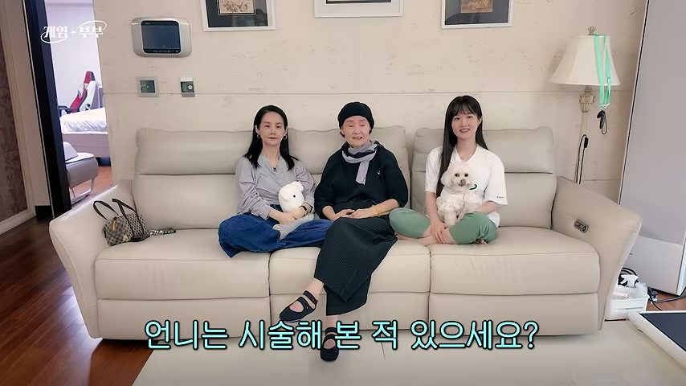
D · 24초PD 질문 → 주치의 → 보톡스&레이저 → 기미엔 시술 X → 도포 → 크림 안내
추가안 D · PD 질문 → 주치의 → 보톡스&레이저 → 기미엔 시술 X → 도포 → 크림 안내
24초 · 원본 영상의 PD 질문과 본인 답으로 열고, 나레이션이 “기미만큼은 시술 안 한다”로 꺾은 뒤 도포·제품 안내로 닫는다. 1~3컷은 원본(3:30~4:06)에서 이어 붙인 컷이다.
기승전결: 기: PD가 시술 경험을 묻는다 / 승: 피부과 주치의가 있고 보톡스·레이저는 받는다 / 전: 그런데 기미는 시술 안 하고 화장품으로 관리, 바로 이 크림을 바른다 / 결: 직접 쓰는 그 크림을 안내. 레이저의 좋고 나쁨을 광고 결론으로 삼지 않는다.
전체 나레이션(이어 읽기)
“언니는 시술해 본 적 있으세요?”“내 피부과 주치의가 있어.”“1년에 한 번, 두 번? 그 정도 가서 가볍게 레이저.”보톡스에 레이저까지 받는 김가연. 그런데 기미만큼은 절대 시술 안 한대요… 화장품으로 관리한다던데……바로 이 크림.“이거 봐 봐, 기미가 지워지잖아.”김가연 영상 공개 후 약국에선 품절이 빠르다는데… 여기 링크에서 할인가로 쟁여두세요.
18–24초 · 그대로 읽는 대본나레이션김가연 영상 공개 후 약국에선 품절이 빠르다는데… 여기 링크에서 할인가로 쟁여두세요.
편집 메모 1~3컷은 원본 210.5~246.5초에서 이어 붙인 점프컷이다(212.7→219.6초, 221.1→241.8초, 두 번 점프). 렌더에서 컷마다 앞뒤 프레임을 확인한다.
이 컷을 고른 이유 · 공유/저장 · 음성 초안
컷
선정 판단
원본 반응 기록
음성 초안
01 · 기 · PD가 시술 경험을 묻는 원본 구간
원본 영상의 PD 질문 장면 그대로. 소파 전경과 원본 자막이 함께 보인다.
원본 구간 · 성과 판정 대상 아님
PD“언니는 시술해 본 적 있으세요?”
02 · 본인 답 · 피부과 주치의
원본 영상에서 김가연이 직접 답하는 구간 그대로.
원본 구간 · 성과 판정 대상 아님
김가연“내 피부과 주치의가 있어.”
03 · 본인 답 · 보톡스 & 레이저
원본 영상의 노란 자막 “보톡스 & 레이저”가 이미 들어 있는 구간 그대로.
원본 구간 · 성과 판정 대상 아님
김가연“1년에 한 번, 두 번? 그 정도 가서 가볍게 레이저.”
04 · 김가연 얼굴 먼저
김가연을 알아보게 하는 컷은 본인 얼굴로 유지.
성과 판정 대상 아님
나레이션보톡스에 레이저까지 받는 김가연. 그런데 기미만큼은 절대 시술 안 한대요… 화장품으로 관리한다던데…
05 · 본인의 실제 도포
손끝이 피부에 닿는 위치와 얼굴 측면을 동시에 보여줌. 김가연 볼 도포 촬영의 손 위치 참고.
공유·저장 미확인 · 10/27 활성 표시, 시작 10/15
나레이션…바로 이 크림.김가연“이거 봐 봐, 기미가 지워지잖아.”
06 · 제품 든 김가연 + CTA
앞 컷에서 김가연이 우리 제품(튜브)을 들고 있는 장면을 그대로 다시 쓰고, 그 위에 구매 안내(CTA)만 띄운다. 새로 촬영하지 않는다.
구조 참고: 한혜진 광고2377215103087916 · 공유저장 미확인
나레이션김가연 영상 공개 후 약국에선 품절이 빠르다는데… 여기 링크에서 할인가로 쟁여두세요.
추가 요청 가능하면 촬영 때 “기미에는 시술 안 해요” 본인 한마디를 받으면 4번 나레이션을 대체한다. 근거: 9/21 미팅 발언 “기미는 레이저 시술하면 안 돼요”·“저도 기미에 관련해서 받아본 적이 한 번도 없어요”(내부 미팅 녹음, 광고 음성으로 쓰지 않음).
대체 가능 촬영본에 위 멘트가 있으면 4번 나레이션 대신 김가연 육성으로 교체 가능
베스트는 이 콘티의 역할·구도 적합성 판단이다. 공유·저장은 원본 영상 전체의 반응이며 개별 컷의 성과가 아니다. 신규 조합 성과는 미검증.
마무리 근거: 한혜진 아누아 Meta 나레이션 “한혜진 유튜브 공개 후 약국들은 전부 매진이라는데 / 여기 공급처 비밀링크에서 저렴하게 쟁여두세요” (refs/narration_transcripts_20261027.md)
엔드카드(신규): 마지막 CTA 뒤에 제품 이미지(우리 튜브 정면, side_tube 또는 제품 사진) + 큰 자막 “N차 완판 · 품절대란”을 1.5~2초 붙인다. 표기 길이에는 이 시간이 포함돼 있지 않다. N=실제 완판 횟수로 교체(확정 전 숫자 노출 금지). 근거: 소유 레퍼런스 나레이션 엔딩 “이미 여러 번 품절 대란 났다고” (refs/narration_transcripts_20261027.md). 이벤트 엔딩(F 등)은 혜택 화면 다음 마지막 컷.
L1 · D 본편 상단 비교D와 동일 본편. 같은 칸에 L3~L7 비교 카드
같은 레이저 본편(PD 질문 시작) · 상단 고정 문구 7안
본편·하단 문구·음성·엔딩을 고정하고 상단만 비교하는 후보. 실제 성과는 아직 미검증이다.
기미엔 무조건 레이저?ㄴㄴ 여배우는 이렇게 관리함
출처: 김가연 임요환의 게임부부
L1 · 기본안 · 상단 문구 테스트 후보
동안 배우도 기미 고민?김가연이 직접 보여준 관리
출처: 김가연 임요환의 게임부부
L3 · 동안 통념 · 상단 문구 테스트 후보
동안으로 소문난 여배우레이저 대신 이것???김가연 기미삭제크림
출처: 김가연 임요환의 게임부부
L4 · 상단 문구 테스트 후보 (3줄: 맨 아래는 검색 키워드 줄)
얼굴에 난 잡티,기미가 아니라 00이라던데???김가연 기미삭제크림
출처: 김가연 임요환의 게임부부
L5 · 상단 문구 테스트 후보 (3줄: 맨 아래는 검색 키워드 줄) · 00 = 흑자, 강의 대사로 회수
기미뿐만 아니라흑자도 지워준다고???김가연 기미삭제크림
출처: 김가연 임요환의 게임부부
L6 · 상단 문구 테스트 후보 (3줄: 맨 아래는 검색 키워드 줄)
나이는 55세, 피부는 30대김가연이 매일 바른다는 이것김가연 기미삭제크림
출처: 김가연 임요환의 게임부부
L7 · 상단 문구 테스트 후보 (3줄: 맨 아래는 검색 키워드 줄) · “이것” = 기미크림, 제품 등장 컷에서 회수. 근거: 썸네일 카피 실측(뷰티광고 나이·숫자 장치) C4 구조
추가 촬영 요청: 볼 도포 접사 · 기미엔 시술 안 한다는 본인 한마디. 답변 내용은 김가연의 실제 경험에서 받는다.
마무리 근거: 한혜진 아누아 Meta 나레이션 “한혜진 유튜브 공개 후 약국들은 전부 매진이라는데 / 여기 공급처 비밀링크에서 저렴하게 쟁여두세요” (refs/narration_transcripts_20261027.md)
엔드카드(신규): 마지막 CTA 뒤에 제품 이미지(우리 튜브 정면, side_tube 또는 제품 사진) + 큰 자막 “N차 완판 · 품절대란”을 1.5~2초 붙인다. 표기 길이에는 이 시간이 포함돼 있지 않다. N=실제 완판 횟수로 교체(확정 전 숫자 노출 금지). 근거: 소유 레퍼런스 나레이션 엔딩 “이미 여러 번 품절 대란 났다고” (refs/narration_transcripts_20261027.md). 이벤트 엔딩(F 등)은 혜택 화면 다음 마지막 컷.
N1 · 24초 (N2는 둘째 줄 “동안 여배우가” 호명 변주)D와 동일 6컷
테스트 대기 · 김가연 이름 vs 동안 여배우
공통 훅: 기미엔 무조건 레이저? PD 질문 → 주치의 → 보톡스&레이저 → 기미엔 시술 X → 도포 → 크림 안내의 동일한 24초 본편. 상단 둘째 줄의 인물 호명만 바꾸며 실제 집행·성과 판정 전인 편집 콘티다.
마무리 근거: 한혜진 아누아 Meta 나레이션 “한혜진 유튜브 공개 후 약국들은 전부 매진이라는데 / 여기 공급처 비밀링크에서 저렴하게 쟁여두세요” (refs/narration_transcripts_20261027.md)
엔드카드(신규): 마지막 CTA 뒤에 제품 이미지(우리 튜브 정면, side_tube 또는 제품 사진) + 큰 자막 “N차 완판 · 품절대란”을 1.5~2초 붙인다. 표기 길이에는 이 시간이 포함돼 있지 않다. N=실제 완판 횟수로 교체(확정 전 숫자 노출 금지). 근거: 소유 레퍼런스 나레이션 엔딩 “이미 여러 번 품절 대란 났다고” (refs/narration_transcripts_20261027.md). 이벤트 엔딩(F 등)은 혜택 화면 다음 마지막 컷.
기존 요청 멘트·컷이 촬영돼 있다면 새 김가연 촬영 없이도 약국 → 성분 → 실사용 → 1+1+1 엔딩까지 구성할 수 있다. E1은 기존 요청분과 제품 정지사진 편집으로 완성하는 36초안, E2는 같은 본문에 기존 자체촬영 요청 S6·S13을 실행해 제품 장면을 강화하는 36초안이다. 사용자 제안에 따른 제작 초안이며 기존 전체 구성8안·N1/N2는 보존한다.
E1 · 기존 요청서 활용안 · 추가 김가연 촬영 없이 구성
36초 · 8컷 · 편집 예상 시간(실제 음원 확정 전). 본인 ⑥약국 → ①면봉 → ⑤성분명 + 별도 설명 → ②실사용 → ⑦이벤트 → 3개 구성 → 행동 CTA. 김가연 멘트와 편집용 별도 나레이션을 컷 아래에서 구분한다.
전체 나레이션(이어 읽기)
기미엔 무조건 레이저? 그런데 김가연은…“…이거 약국에도 있어.”매일 이렇게 직접 바르는데, 이 크림 이름이…“…트라넥삼산.”…알고 보니 트라넥삼산 5%를 담은 기미·잡티 관리 크림이라는데요. 본인 말로는…“…실제로 내가 쓰는 화장품.”“여기 대표한테 말해서 내가 이벤트 받아왔어!”그래서 이번 구성은 원 플러스 원 플러스 원,영상 공개 후 약국에선 품절이 빠르다는데… 여기 링크에서 할인가로 쟁여두세요.
기미엔 무조건 레이저?ㄴㄴ 여배우는 이렇게 관리함
0–3초
기미엔 무조건 레이저?
출처: 김가연 임요환의 게임부부
01 · 얼굴로 먼저 시작
나레이션기미엔 무조건 레이저? 그런데 김가연은…자막기미엔 무조건 레이저?
구도 참고: 기존 김가연 얼굴 컷.
기미엔 무조건 레이저?ㄴㄴ 여배우는 이렇게 관리함
3–6초
이거 약국에도 있어.
출처: 김가연 임요환의 게임부부
02 · 초반 두 번째 컷 · 약국 멘트
김가연“…이거 약국에도 있어.”자막이거 약국에도 있어.
요청된 원거리·정면·측면 컷에서 회수 우선.
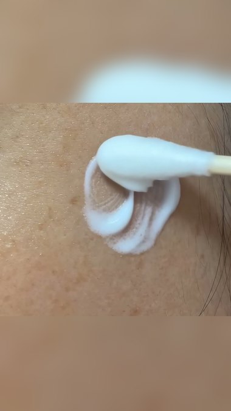
기미엔 무조건 레이저?ㄴㄴ 여배우는 이렇게 관리함
6–10초
직접 바르는 모습
참고 이미지 · 면봉 도포 구도
03 · 이미 요청한 면봉 도포 접사
나레이션매일 이렇게 직접 바르는데, 이 크림 이름이…자막직접 바르는 모습
기존 CUTS의 클로즈업 캠·면봉 도포. 신규 촬영 필수로 분류하지 않음.
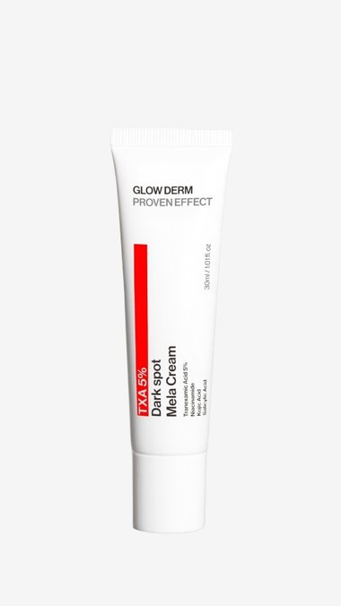
기미엔 무조건 레이저?ㄴㄴ 여배우는 이렇게 관리함
10–17초
트라넥삼산 5%를 담은 기미·잡티 관리 크림
참고 이미지 · 글로우덤 제품 사진
04 · 제품 사진·도포 화면에 성분 설명
김가연“…트라넥삼산.”나레이션…알고 보니 트라넥삼산 5%를 담은 기미·잡티 관리 크림이라는데요. 본인 말로는…자막트라넥삼산 5%를 담은 기미·잡티 관리 크림
김가연: “트라넥삼산” → NA: “알고 보니 트라넥삼산 5%를 담은 기미·잡티 관리 크림이라는데요.” 기존 제품 정지사진 + 요청된 도포 장면 편집.
기미엔 무조건 레이저?ㄴㄴ 여배우는 이렇게 관리함
17–21초
실제로 내가 쓰는 화장품
출처: 김가연 임요환의 게임부부
05 · 본인의 실사용 멘트로 돌아오기
김가연“…실제로 내가 쓰는 화장품.”자막실제로 내가 쓰는 화장품
기존 모녀·실사용 요청 멘트에서 본인 사용 부분 회수.
기미엔 무조건 레이저?ㄴㄴ 여배우는 이렇게 관리함
21–27초
여기 대표한테 말해서 내가 이벤트 받아왔어!
출처: 김가연 임요환의 게임부부
06 · 김가연 본인의 이벤트 멘트
김가연“여기 대표한테 말해서 내가 이벤트 받아왔어!”자막여기 대표한테 말해서 내가 이벤트 받아왔어!
요청서의 호통 톤·직접 받아온 이벤트 멘트를 사용.
1 + 1 + 1
기미엔 무조건 레이저?ㄴㄴ 여배우는 이렇게 관리함
27–30초
1+1+1일 때
참고 이미지 · 글로우덤 제품 사진
07 · 3개 구성·혜택을 한눈에 제시
나레이션그래서 이번 구성은 원 플러스 원 플러스 원,자막1+1+1일 때
단일 튜브 사진 3개를 편집 배치 · 구성 예시.
기미엔 무조건 레이저?ㄴㄴ 여배우는 이렇게 관리함
30–36초
영상 공개 후 약국에선 품절이 빠르다는데… 여기 링크에서 할인가로 쟁여두세요.
출처: 김가연 임요환의 게임부부
08 · 얼굴로 돌아와 구매 안내
나레이션영상 공개 후 약국에선 품절이 빠르다는데… 여기 링크에서 할인가로 쟁여두세요.자막영상 공개 후 약국에선 품절이 빠르다는데… 여기 링크에서 할인가로 쟁여두세요.
메타 구매 버튼용. 피드 연결 경로는 제작노트 참고.
E2 · 자체 보강촬영 강화안 · 기존 S6·S13 요청 실행
36초 · 8컷 · 편집 예상 시간(실제 음원 확정 전). 본인 ⑥약국 → ①면봉 → ⑤성분명 + 별도 설명 → ②실사용 → ⑦이벤트 → 3개 구성 → 행동 CTA. 김가연 멘트와 편집용 별도 나레이션을 컷 아래에서 구분한다.
전체 나레이션(이어 읽기)
기미엔 무조건 레이저? 그런데 김가연은…“…이거 약국에도 있어.”매일 이렇게 직접 바르는데, 이 크림 이름이…“…트라넥삼산.”…알고 보니 트라넥삼산 5%를 담은 기미·잡티 관리 크림이라는데요. 본인 말로는…“…실제로 내가 쓰는 화장품.”“여기 대표한테 말해서 내가 이벤트 받아왔어!”그래서 이번 구성은 원 플러스 원 플러스 원,영상 공개 후 약국에선 품절이 빠르다는데… 여기 링크에서 할인가로 쟁여두세요.
기미엔 무조건 레이저?ㄴㄴ 여배우는 이렇게 관리함
0–3초
기미엔 무조건 레이저?
출처: 김가연 임요환의 게임부부
01 · 얼굴로 먼저 시작
나레이션기미엔 무조건 레이저? 그런데 김가연은…자막기미엔 무조건 레이저?
구도 참고: 기존 김가연 얼굴 컷.
기미엔 무조건 레이저?ㄴㄴ 여배우는 이렇게 관리함
3–6초
이거 약국에도 있어.
출처: 김가연 임요환의 게임부부
02 · 초반 두 번째 컷 · 약국 멘트
김가연“…이거 약국에도 있어.”자막이거 약국에도 있어.
요청된 원거리·정면·측면 컷에서 회수 우선.
기미엔 무조건 레이저?ㄴㄴ 여배우는 이렇게 관리함
6–10초
직접 바르는 모습
참고 이미지 · 면봉 도포 구도
03 · 이미 요청한 면봉 도포 접사
나레이션매일 이렇게 직접 바르는데, 이 크림 이름이…자막직접 바르는 모습
기존 CUTS의 클로즈업 캠·면봉 도포. 신규 촬영 필수로 분류하지 않음.
기미엔 무조건 레이저?ㄴㄴ 여배우는 이렇게 관리함
10–17초
트라넥삼산 5%를 담은 기미·잡티 관리 크림
참고 이미지 · 글로우덤 제품 사진
04 · S6 · 실물 라벨 접사로 성분 설명 강화
김가연“…트라넥삼산.”나레이션…알고 보니 트라넥삼산 5%를 담은 기미·잡티 관리 크림이라는데요. 본인 말로는…자막트라넥삼산 5%를 담은 기미·잡티 관리 크림
김가연: “트라넥삼산” → NA: “알고 보니 트라넥삼산 5%를 담은 기미·잡티 관리 크림이라는데요.” 기존 자체촬영 요청 S6 실행: 제품 라벨 3초 이상. 새 김가연 촬영 아님.
기미엔 무조건 레이저?ㄴㄴ 여배우는 이렇게 관리함
17–21초
실제로 내가 쓰는 화장품
출처: 김가연 임요환의 게임부부
05 · 본인의 실사용 멘트로 돌아오기
김가연“…실제로 내가 쓰는 화장품.”자막실제로 내가 쓰는 화장품
기존 모녀·실사용 요청 멘트에서 본인 사용 부분 회수.
기미엔 무조건 레이저?ㄴㄴ 여배우는 이렇게 관리함
21–27초
여기 대표한테 말해서 내가 이벤트 받아왔어!
출처: 김가연 임요환의 게임부부
06 · 김가연 본인의 이벤트 멘트
김가연“여기 대표한테 말해서 내가 이벤트 받아왔어!”자막여기 대표한테 말해서 내가 이벤트 받아왔어!
요청서의 호통 톤·직접 받아온 이벤트 멘트를 사용.
1 + 1 + 1
기미엔 무조건 레이저?ㄴㄴ 여배우는 이렇게 관리함
27–30초
1+1+1일 때
참고 이미지 · 글로우덤 제품 사진
07 · 3개 구성·혜택을 한눈에 제시
나레이션그래서 이번 구성은 원 플러스 원 플러스 원,자막1+1+1일 때
기존 자체촬영 요청 S13 실행: 실물 1+1+1 세트. 현재 화면은 제품사진 3개 배치 예시.
기미엔 무조건 레이저?ㄴㄴ 여배우는 이렇게 관리함
30–36초
영상 공개 후 약국에선 품절이 빠르다는데… 여기 링크에서 할인가로 쟁여두세요.
출처: 김가연 임요환의 게임부부
08 · 얼굴로 돌아와 구매 안내
나레이션영상 공개 후 약국에선 품절이 빠르다는데… 여기 링크에서 할인가로 쟁여두세요.자막영상 공개 후 약국에선 품절이 빠르다는데… 여기 링크에서 할인가로 쟁여두세요.
메타 구매 버튼용. 피드 연결 경로는 제작노트 참고.
제작노트 · 기존 요청대사 회수·촬영 요청·검증 대기
사용자 제안과 기존 요청 연결: 사용자가 초반 약국 멘트와 1+1+1 엔딩을 제안했다. 9/21 촬영브리핑에 이미 ⑥ “이거 약국에도 있어. 지금 행사 중이야.”, ⑦ “여기 대표한테 말해서 내가 이벤트 받아왔어!” 요청이 있다. 구대본에도 “내가 대표님께 강력하게 한마디 해서 1+1+1 이벤트 해 달라고 했거든?”, “이거 약국에서도 파는 기미크림이고”가 있으나 촬영 요청·기획대본이며 실제 발언 전사가 아니다. 이번 안은 기존 요청대사를 초반과 끝으로 재배치한 초안이다.
어디까지 가능한가: E1은 기존 김가연 요청 ①·②·⑤·⑥·⑦와 원거리·정면·측면·도포·도포 후 피부 컷, 현재 제품 정지사진 편집만으로 콘티가 성립한다. 성분 설명과 행동 CTA는 별도 나레이션으로 붙인다. 새 김가연 촬영을 필수 전제로 두지 않는다. E2는 같은 본문에 기존 자체촬영 요청 S6(제품 라벨 3초), S13(1+1+1 실물 세트)을 실행해 보강한다. 제품 사진 3개 배치는 구성 예시이며 실제 행사 캡처가 아니다.
읽는 대본·시간: 컷 아래 [김가연 · 기존 촬영 요청대사]은 기존 요청서에서 가져올 문장이고 실제 녹음 확보를 뜻하지 않는다. [별도 NA]만 새로 녹음한다. E1/E2의 말·순서·36초는 동일하며 제품 촬영 방식만 달라진다. 10–17초에는 성분명 원음 약 1초와 설명 약 6초를 배정했다. 자연스럽게 읽은 실녹음이 길면 음성을 억지로 배속하지 않고 해당 컷과 전체 길이를 늘린다.
공통 소재 확인: 요청서와 구대본은 확인했지만 해당 실제 녹음·촬영 구간이 확보됐다는 뜻은 아니다. 기존 촬영본에서 우선 회수하고 빠진 요청 컷만 보충한다. ⑤는 “트라넥삼산” 성분명 부분만 사용하고 이어지는 제품 설명은 별도 나레이션이다. 닦기 장면을 TXA의 즉시 효과 입증으로 설명하지 않는다.
정말 새로운 선택 추가: 얼굴에서 제품으로 초점이 이동하는 연결 동작, 멘트 앞뒤 1초의 무음 손동작을 남기면 편집 연결을 강화할 수 있다. 기존 요청된 얼굴·손·제품 정면 구도, 면봉 도포, 피부를 손으로 짚는 컷은 신규 필수 촬영으로 중복 요청하지 않는다.
확인 대기: 김가연이 직접 요청한 행사인지, 1+1+1의 실제 구성·기간·판매 경로를 확인한다. 약국은 내부 자료에 명동 레디영·성수 도레미 판매 기록이 있으나 이번 현재 판매 상태를 별도로 확인한다. 약국 판매를 의약품·약사 추천으로 넓혀 표현하지 않는다. 공식 제품 설명에서 TXA 5%가 확인되며, 추가 효능 문구는 시험 범위를 대조한 뒤 작성한다. “실제로 내가 쓰는 화장품” 역시 기획문구와 촬영본을 구분한다. 확인 전에는 행사 확정 공지나 실제 발언 전사로 취급하지 않는다.
행동 CTA는 게시 위치에 맞춘다: 메타의 구매 버튼이 있는 배치는 “아래에서 확인하세요”. 링크가 없는 피드는 실제 운영 경로에 맞춰 “프로필에서 이번 구성 확인하세요” 또는 “댓글에 ‘구성’ 남겨주세요”로 교체한다. 연결 경로가 정해지기 전에 댓글 자동안내가 실행된 것처럼 쓰지 않는다.
레퍼런스에서 가져온 것은 연결 방식:성수기 관리템 광고의 인물·제품 → 할인 안내·빠른 구매 요청과 풍자 광고의 제품 추천 → 얼굴에서 행동 요청을 참고했다. 전자는 정가 가정 467.8원으로 숫자 조건 통과·인물 신원 미확정, 후자는 502.15원으로 500원 기준 미충족이다. 이번 조합의 성과는 미검증이다.
추가 훅 테스트 대기: 첫 0–3초만 “기미엔 무조건 레이저?” 대 “약국에도 파는 그 크림?”으로 바꾸고 3–36초 약국 이야기·성분·실사용·혜택·CTA는 동일하게 둔다. 얼굴 이미지·길이·하단 안내도 동일 조건으로 비교하며 승자는 아직 미검증이다.
E1/E2 비교: 인물 이름 비교가 아니라 제작 범위 비교다. E1은 기존 요청분·정지사진 편집, E2는 기존 자체촬영 요청 실행으로 제품 장면을 보강한다. 기존 N1/N2의 이름 훅 통제 테스트는 별도 보존한다.
마무리 근거: 한혜진 아누아 Meta 나레이션 “한혜진 유튜브 공개 후 약국들은 전부 매진이라는데 / 여기 공급처 비밀링크에서 저렴하게 쟁여두세요” (refs/narration_transcripts_20261027.md)
엔드카드(신규): 마지막 CTA 뒤에 제품 이미지(우리 튜브 정면, side_tube 또는 제품 사진) + 큰 자막 “N차 완판 · 품절대란”을 1.5~2초 붙인다. 표기 길이에는 이 시간이 포함돼 있지 않다. N=실제 완판 횟수로 교체(확정 전 숫자 노출 금지). 근거: 소유 레퍼런스 나레이션 엔딩 “이미 여러 번 품절 대란 났다고” (refs/narration_transcripts_20261027.md). 이벤트 엔딩(F 등)은 혜택 화면 다음 마지막 컷.
F · 약 36초E1 앞 21초 동일 → 화제성 연결 → 3개 구성·링크 혜택 → 혜택 화면 CTA
F · 유튜브 공개 → 약국 매진 → 비밀링크 혜택 엔딩
사용자 제안 제작 초안 · 사실 확인 전 / 성과 미검증. E1의 앞 0–21초는 그대로 두고 마지막 3컷만 아래로 교체한다. 전체 약 36초 예상이며 실제 음원 편집 시간은 확정 전이다.
전체 나레이션(이어 읽기)
기미엔 무조건 레이저? 그런데 김가연은…“…이거 약국에도 있어.”매일 이렇게 직접 바르는데, 이 크림 이름이…“…트라넥삼산.”…알고 보니 트라넥삼산 5%를 담은 기미·잡티 관리 크림이라는데요. 본인 말로는…“…실제로 내가 쓰는 화장품.”그런데 김가연 유튜브 공개 후, 약국에서는 매진이라는데……비밀링크에서는 원 플러스 원 플러스 원 이벤트 중이라고요?쟁여두실 분들은 아래 비밀링크에서 확인하세요.
기미엔 무조건 레이저?ㄴㄴ 여배우는 이렇게 관리함
21–27초
김가연 유튜브 공개 후, 약국에서는 매진이라는데…
출처: 김가연 임요환의 게임부부
06 · 김가연 얼굴에서 화제성으로 연결
나레이션그런데 김가연 유튜브 공개 후, 약국에서는 매진이라는데…자막김가연 유튜브 공개 후, 약국에서는 매진이라는데…
앞 0–21초 본문은 E1과 동일.
1 + 1 + 1
기미엔 무조건 레이저?ㄴㄴ 여배우는 이렇게 관리함
27–31초
비밀링크에서는 1+1+1 이벤트 중?
참고 이미지 · 글로우덤 제품 사진
07 · 3개 구성·링크 혜택
나레이션…비밀링크에서는 원 플러스 원 플러스 원 이벤트 중이라고요?자막비밀링크에서는 1+1+1 이벤트 중?
제품 3개 배치는 구성 예시. 실제 행사 화면 아님.
1 + 1 + 1
기미엔 무조건 레이저?ㄴㄴ 여배우는 이렇게 관리함
31–36초
쟁여두실 분들은 아래 비밀링크에서 확인하세요.
참고 이미지 · 글로우덤 제품 사진
08 · 혜택 화면에서 구매 안내
나레이션쟁여두실 분들은 아래 비밀링크에서 확인하세요.자막쟁여두실 분들은 아래 비밀링크에서 확인하세요.
제품 3개 배치는 구성 예시. 실제 행사 화면 아님.
제작노트 · 이 변주의 확인 항목
‘유튜브 공개 후 약국 매진’은 현재 확인된 사실이 아니라 사용자가 제안한 카피다. 유튜브 실제 공개·상품 일치, 약국 재고 매진 사실과 시점, 공개와 매진의 인과, 실제 비밀링크 경로 및 1+1+1 행사 조건을 확인한다. 확인 전 확정 행사 공지나 실제 김가연 발언으로 쓰지 않는다. 본인 멘트가 아닌 별도 나레이션 초안이며 검증된 승자 포맷으로 분류하지 않는다.
마무리 근거: 한혜진 아누아 Meta 나레이션 “한혜진 유튜브 공개 후 약국들은 전부 매진이라는데 / 여기 공급처 비밀링크에서 저렴하게 쟁여두세요” (refs/narration_transcripts_20261027.md)
엔드카드(신규): 마지막 CTA 뒤에 제품 이미지(우리 튜브 정면, side_tube 또는 제품 사진) + 큰 자막 “N차 완판 · 품절대란”을 1.5~2초 붙인다. 표기 길이에는 이 시간이 포함돼 있지 않다. N=실제 완판 횟수로 교체(확정 전 숫자 노출 금지). 근거: 소유 레퍼런스 나레이션 엔딩 “이미 여러 번 품절 대란 났다고” (refs/narration_transcripts_20261027.md). 이벤트 엔딩(F 등)은 혜택 화면 다음 마지막 컷.
레이저 통념 반전
레이저 한 번이면 끝?기미는 그렇게 안 끝나
E-A · 26.5초정면 호통 → 레이저 통념 뒤집기 → 기미 부위 짚기 → 한 번에 안 끝난다 → 제품 보여주기 → 직접 도포 → 비포 DAY1 → 2주 후 → 얼굴+제품 안내
추가안 E-A · 호통 → 레이저 반전 → 그게 기미 → 꾸준한 관리 → 2주 변화
26.5초 · 김가연의 직설 반말 호통으로 0초에 시작한다. 레이저면 끝난다는 통념을 뒤집고, 레이저 뒤 오히려 올라오는 기미를 짚은 다음 매일 바르는 관리·도포, 2주 날짜카드 비교로 변화를 보여주고 구매 안내로 끝낸다. 전 컷 추가 촬영 제안 대사.
기승전결: 기: 레이저면 끝난다는 통념을 호통으로 정면 반박 / 승: 오히려 큰일 나는 게 있다는 반전 / 전: 그게 기미 — 부위를 짚고 한 번에 안 끝난다고 정리 / 결: 매일 바르는 우리 기미크림·도포 → 2주 날짜카드 비교 → 구매 안내. 다음 광고 필수 6요소 중 레이저 비교·도포·비포·2주 날짜카드를 반영, 고소 보증·전문가 해설은 25초 흐름 유지를 위해 뺐다.
전체 나레이션(이어 읽기)
“야, 레이저 한 번 받으면 다 끝날 것 같지?”“아니야. 레이저 받고 오히려 큰일 나는 게 있어…”“…그게 기미야. 레이저 받고 더 올라오는 거.”레이저로 끝이 아니라면, 답은?“기미는 한 번에 끝나는 게 아니야. 매일 관리하는 거야…”“…그래서 나는 이거 발라.”“아침저녁으로, 기미 있는 데 이렇게.”같은 자리, 첫날.“2주만 꾸준히 발라 봐…”그리고 2주 뒤.“…확 달라진 게 보여.”김가연 영상 공개 후 약국에선 품절이 빠르다는데… 여기 링크에서 할인가로 쟁여두세요.
20.5–26.5초 · 그대로 읽는 대본나레이션김가연 영상 공개 후 약국에선 품절이 빠르다는데… 여기 링크에서 할인가로 쟁여두세요.자막김가연이 꾸준히 바르는 그 크림
이 컷을 고른 이유 · 공유/저장 · 음성 초안
컷
선정 판단
원본 반응 기록
음성 초안
01 · 기 · 정면 호통으로 멈추게
정면 얼굴이 화면을 채워 첫 프레임 호통에 맞는 구도. 실제 대사는 추가 촬영.
김가연 원본 구도 · 성과 판정 대상 아님
김가연“야, 레이저 한 번 받으면 다 끝날 것 같지?”
02 · 승 · 레이저 통념 뒤집기
레이저 이야기를 하던 기존 장면 구도. 반전 대사는 추가 촬영.
원본 구도 · 초안 성과 미검증
김가연“아니야. 레이저 받고 오히려 큰일 나는 게 있어…”
03 · 전 · 기미 부위 짚기
볼을 만지며 말해 관리 부위가 분명한 구도. 김가연이 광대·볼을 짚는 촬영 참고.
공유·저장 미확인 · 10/27 활성 표시, 시작 8/2
김가연“…그게 기미야. 레이저 받고 더 올라오는 거.”
04 · 전 · 한 번에 안 끝난다는 정리
정면으로 돌아와 호통에서 설명 톤으로 전환하는 구도.
김가연 원본 구도 · 성과 판정 대상 아님
나레이션레이저로 끝이 아니라면, 답은?김가연“기미는 한 번에 끝나는 게 아니야. 매일 관리하는 거야…”
05 · 결 · 우리 기미크림 보여주기
병과 패키지가 화면을 채워 제품명이 읽히는 구도. 우리 기미크림으로 대체 촬영.
공유·저장 미확인 · 10/27 활성 표시, 시작 10/8
김가연“…그래서 나는 이거 발라.”
06 · 결 · 기미 부위에 직접 도포
손끝이 피부에 닿는 위치와 얼굴 측면이 함께 보이는 구도. 김가연 볼 도포 참고.
공유·저장 미확인 · 10/27 활성 표시, 시작 10/15
김가연“아침저녁으로, 기미 있는 데 이렇게.”
07 · 비포 · DAY 1 기미 부위
기미 부위가 화면을 채우는 비포 구도. 실제 광고는 김가연 본인 또는 사용모델 비포 접사로 촬영.
구도 참고 · 원본 링크 미확인
나레이션같은 자리, 첫날.김가연“2주만 꾸준히 발라 봐…”
08 · 2주 후 · 날짜카드 비교
관리 후 얼굴을 보여주는 김가연 원본 구도. 비포와 같은 부위·각도로 2주 후를 촬영.
김가연 원본 구도 · 성과 판정 대상 아님
나레이션그리고 2주 뒤.김가연“…확 달라진 게 보여.”
09 · 결 · 얼굴+제품으로 구매 안내
김가연과 제품을 함께 남기고 나레이션으로 구매 경로를 안내하는 D안과 같은 엔딩.
구조 참고: 한혜진 광고2377215103087916 · 공유저장 미확인
나레이션김가연 영상 공개 후 약국에선 품절이 빠르다는데… 여기 링크에서 할인가로 쟁여두세요.
베스트는 이 콘티의 역할·구도 적합성 판단이다. 공유·저장은 원본 영상 전체의 반응이며 개별 컷의 성과가 아니다. 신규 조합 성과는 미검증.
마무리 근거: 한혜진 아누아 Meta 나레이션 “한혜진 유튜브 공개 후 약국들은 전부 매진이라는데 / 여기 공급처 비밀링크에서 저렴하게 쟁여두세요” (refs/narration_transcripts_20261027.md)
엔드카드(신규): 마지막 CTA 뒤에 제품 이미지(우리 튜브 정면, side_tube 또는 제품 사진) + 큰 자막 “N차 완판 · 품절대란”을 1.5~2초 붙인다. 표기 길이에는 이 시간이 포함돼 있지 않다. N=실제 완판 횟수로 교체(확정 전 숫자 노출 금지). 근거: 소유 레퍼런스 나레이션 엔딩 “이미 여러 번 품절 대란 났다고” (refs/narration_transcripts_20261027.md). 이벤트 엔딩(F 등)은 혜택 화면 다음 마지막 컷.
↪ L4 · 24초 — D 본편 그대로 재사용, 상단만 교체 (위 L1 칸의 비교 카드). 맨 아래 키워드 줄 “김가연 기미삭제크림”↪ 나레이션 없음 · 강의 원테이크 상단 대안 — 강의 카드의 상단 대안 줄에 같은 3줄 문구
궁금증 장치 · 00 = 흑자
얼굴에 난 잡티,기미가 아니라 00이라던데???김가연 기미삭제크림
↪ L5 · 24초 — D 본편 그대로 재사용, 상단만 교체 (위 L1 칸의 비교 카드). 00 = 흑자, 강의 대사로 회수↪ 나레이션 없음 · 강의 원테이크 상단 대안 — “기미가 커지면 흑자가 되는 거야”(6–15초)로 00을 회수
흑자 묶음 · 두 번째 대안
기미뿐만 아니라흑자도 지워준다고???김가연 기미삭제크림
↪ L6 · 24초 — D 본편 그대로 재사용, 상단만 교체 (위 L1 칸의 비교 카드). 흑자 묶음의 두 번째 상단 대안(위 “기미가 아니라 00” 묶음과 짝)↪ 나레이션 없음 · 강의 원테이크 상단 대안 — 강의 대사 “기미뿐만 아니라 흑자에도 이거 발라”(23–29초)와 연결
나이·숫자 장치 · “이것” 회수
나이는 55세, 피부는 30대김가연이 매일 바른다는 이것
↪ L7 · 24초 — D 본편 그대로 재사용, 상단만 교체 (위 L1 칸의 비교 카드). “이것” = 기미크림, 제품 등장 컷에서 회수. 근거: 썸네일 카피 실측(뷰티광고 나이·숫자 장치) C4 구조
결과 선공개
2주 만에 진짜잡티가 사라진다고?
E-B · 26초비포 DAY1 → 2주 후(훅) → 호통 → 레이저 반전 → 그게 기미 → 한 번에 안 끝난다 → 제품 → 도포 → 안내
추가안 E-B · 2주 변화 훅 → 호통 → 레이저 반전 → 그게 기미 → 꾸준한 관리
26초 · E-A의 2주 변화 컷을 0초 훅으로 끌어올린 버전. 비포→2주 후 비교와 김가연의 가벼운 한마디로 멈추게 한 뒤, 호통·레이저 반전·기미·관리·도포로 이어 구매 안내로 끝낸다. 전 컷 추가 촬영 제안 대사.
기승전결: 기: 2주 비포→후 비교로 결과 먼저 / 승: 레이저면 끝난다는 통념을 호통으로 반박 / 전: 레이저 뒤 큰일 나는 게 기미, 한 번에 안 끝난다 / 결: 매일 바르는 우리 기미크림·도포 → 구매 안내. 6요소 중 비포 먼저·2주 날짜카드·레이저 비교·도포 반영.
전체 나레이션(이어 읽기)
“2주 동안 딱 썼는데…”“…바로 변해~”그런데 갑자기 호통이…“근데 너네, 레이저만 받으면 끝날 것 같지?”“아니야. 레이저 받고 오히려 큰일 나는 게 있어…”“…그게 기미야. 레이저 받고 더 올라오는 거.”레이저로 끝이 아니라면, 답은?“기미는 한 번에 안 끝나. 화장품으로 매일 관리하는 거야…”“…그래서 나는 이거 발라.”“아침저녁으로, 기미 있는 데 이렇게.”김가연 영상 공개 후 약국에선 품절이 빠르다는데… 여기 링크에서 할인가로 쟁여두세요.
2주 만에 진짜잡티가 사라진다고?
0–1초
DAY 1
참고 이미지 · 출처 확인 필요
01 · 비포 · DAY 1 기미 부위 출처 확인 필요 · 비포 피부 구도 이미지 김가연 촬영·편집용 참고 / 문구는 제작 초안
20–26초 · 그대로 읽는 대본나레이션김가연 영상 공개 후 약국에선 품절이 빠르다는데… 여기 링크에서 할인가로 쟁여두세요.자막김가연이 2주 바른 그 크림
이 컷을 고른 이유 · 공유/저장 · 음성 초안
컷
선정 판단
원본 반응 기록
음성 초안
01 · 비포 · DAY 1 기미 부위
기미 부위가 화면을 채우는 비포 구도. 실제 광고는 김가연 본인 또는 사용모델 비포 접사로 촬영.
구도 참고 · 원본 링크 미확인
김가연“2주 동안 딱 썼는데…”
02 · 2주 후 · 날짜카드 비교
관리 후 얼굴을 보여주는 김가연 원본 구도. 비포와 같은 부위·각도로 2주 후를 촬영.
김가연 원본 구도 · 성과 판정 대상 아님
김가연“…바로 변해~”
03 · 기 · 정면 호통으로 멈추게
정면 얼굴이 화면을 채워 첫 프레임 호통에 맞는 구도. 실제 대사는 추가 촬영.
김가연 원본 구도 · 성과 판정 대상 아님
나레이션그런데 갑자기 호통이…김가연“근데 너네, 레이저만 받으면 끝날 것 같지?”
04 · 승 · 레이저 통념 뒤집기
레이저 이야기를 하던 기존 장면 구도. 반전 대사는 추가 촬영.
원본 구도 · 초안 성과 미검증
김가연“아니야. 레이저 받고 오히려 큰일 나는 게 있어…”
05 · 전 · 기미 부위 짚기
볼을 만지며 말해 관리 부위가 분명한 구도. 김가연이 광대·볼을 짚는 촬영 참고.
공유·저장 미확인 · 10/27 활성 표시, 시작 8/2
김가연“…그게 기미야. 레이저 받고 더 올라오는 거.”
06 · 전 · 한 번에 안 끝난다는 정리
정면으로 돌아와 호통에서 설명 톤으로 전환하는 구도.
김가연 원본 구도 · 성과 판정 대상 아님
나레이션레이저로 끝이 아니라면, 답은?김가연“기미는 한 번에 안 끝나. 화장품으로 매일 관리하는 거야…”
07 · 결 · 우리 기미크림 보여주기
병과 패키지가 화면을 채워 제품명이 읽히는 구도. 우리 기미크림으로 대체 촬영.
공유·저장 미확인 · 10/27 활성 표시, 시작 10/8
김가연“…그래서 나는 이거 발라.”
08 · 결 · 기미 부위에 직접 도포
손끝이 피부에 닿는 위치와 얼굴 측면이 함께 보이는 구도. 김가연 볼 도포 참고.
공유·저장 미확인 · 10/27 활성 표시, 시작 10/15
김가연“아침저녁으로, 기미 있는 데 이렇게.”
09 · 결 · 얼굴+제품으로 구매 안내
김가연과 제품을 함께 남기고 나레이션으로 구매 경로를 안내하는 D안과 같은 엔딩.
구조 참고: 한혜진 광고2377215103087916 · 공유저장 미확인
나레이션김가연 영상 공개 후 약국에선 품절이 빠르다는데… 여기 링크에서 할인가로 쟁여두세요.
베스트는 이 콘티의 역할·구도 적합성 판단이다. 공유·저장은 원본 영상 전체의 반응이며 개별 컷의 성과가 아니다. 신규 조합 성과는 미검증.
상단 문구 대안 (현재 적용: 2주 만에 진짜 / 잡티가 사라진다고?)
레이저 없이 2주? / 김가연 피부가 이렇게 변해
2주 딱 발랐을 뿐인데 / 잡티가 사라졌다고?
마무리 근거: 한혜진 아누아 Meta 나레이션 “한혜진 유튜브 공개 후 약국들은 전부 매진이라는데 / 여기 공급처 비밀링크에서 저렴하게 쟁여두세요” (refs/narration_transcripts_20261027.md)
엔드카드(신규): 마지막 CTA 뒤에 제품 이미지(우리 튜브 정면, side_tube 또는 제품 사진) + 큰 자막 “N차 완판 · 품절대란”을 1.5~2초 붙인다. 표기 길이에는 이 시간이 포함돼 있지 않다. N=실제 완판 횟수로 교체(확정 전 숫자 노출 금지). 근거: 소유 레퍼런스 나레이션 엔딩 “이미 여러 번 품절 대란 났다고” (refs/narration_transcripts_20261027.md). 이벤트 엔딩(F 등)은 혜택 화면 다음 마지막 컷.
약국 반전 질문
김가연이 따로 바르는 건?알고 보니 약국 기미크림?
P1 · P2(동안 여배우가) · 36초E1 본편 그대로, 상단만 교체
01 · 반전 질문형 · P1 / P2
김가연이 따로 바르는 건?알고 보니 약국 기미크림?
0–3초 · 같은 첫 컷
기미엔 무조건 레이저?
출처: 김가연 임요환의 게임부부
P1 · 김가연 이름형 상단만 교체 · 본문은 E1 동일 36초안
0–3초 · 공통 읽는 대사 나레이션기미엔 무조건 레이저? 그런데 김가연은…김가연(다음 컷) “…이거 약국에도 있어.”자막기미엔 무조건 레이저?이어서 읽는 E1 컷별 대본 ↗
동안 여배우가 따로 바르는 건?알고 보니 약국 기미크림?
0–3초 · 같은 첫 컷
기미엔 무조건 레이저?
출처: 김가연 임요환의 게임부부
P2 · 동안 여배우형 상단만 교체 · 본문은 E1 동일 36초안
0–3초 · 공통 읽는 대사 나레이션기미엔 무조건 레이저? 그런데 김가연은…김가연(다음 컷) “…이거 약국에도 있어.”자막기미엔 무조건 레이저?이어서 읽는 E1 컷별 대본 ↗
마무리 근거: 한혜진 아누아 Meta 나레이션 “한혜진 유튜브 공개 후 약국들은 전부 매진이라는데 / 여기 공급처 비밀링크에서 저렴하게 쟁여두세요” (refs/narration_transcripts_20261027.md)
엔드카드(신규): 마지막 CTA 뒤에 제품 이미지(우리 튜브 정면, side_tube 또는 제품 사진) + 큰 자막 “N차 완판 · 품절대란”을 1.5~2초 붙인다. 표기 길이에는 이 시간이 포함돼 있지 않다. N=실제 완판 횟수로 교체(확정 전 숫자 노출 금지). 근거: 소유 레퍼런스 나레이션 엔딩 “이미 여러 번 품절 대란 났다고” (refs/narration_transcripts_20261027.md). 이벤트 엔딩(F 등)은 혜택 화면 다음 마지막 컷.
사용법 공개 · 이름 노출
50대 동안 여배우 김가연기미 관리 비법이 이거라고?김가연 기미삭제크림
P5 · 36초E1 본편 그대로, 상단 교체 + 첫 컷 면봉 접사(하단 자막 “50대인데 이 피부?”). 면봉 컷 = 첫 1~2초 장면 후킹(눈길 끄는 낯선 동작). 관리 비법의 답은 손으로 꾸준히 바르는 관리 장면. P6과 이름 노출 비교
03 · 사용 방법 공개형 · P5
50대 동안 여배우 김가연기미 관리 비법이 이거라고?김가연 기미삭제크림
0–2초 · 면봉 접사 장면 후킹
50대인데 이 피부?
참고 이미지 · 면봉 도포 구도
P5 · 이름 노출형 상단 교체 + 첫 컷을 면봉 접사로 배치 · 면봉 접사 첫 컷 · 본편은 E1 동일 36초안. 면봉 컷 = 첫 1~2초 장면 후킹(눈길 끄는 낯선 동작). 관리 비법의 답은 손으로 꾸준히 바르는 관리 장면
0–3초 · 공통 읽는 대사 나레이션기미엔 무조건 레이저? 그런데 김가연은…김가연(다음 컷) “…이거 약국에도 있어.”자막50대인데 이 피부?이어서 읽는 E1 컷별 대본 ↗
마무리 근거: 한혜진 아누아 Meta 나레이션 “한혜진 유튜브 공개 후 약국들은 전부 매진이라는데 / 여기 공급처 비밀링크에서 저렴하게 쟁여두세요” (refs/narration_transcripts_20261027.md)
엔드카드(신규): 마지막 CTA 뒤에 제품 이미지(우리 튜브 정면, side_tube 또는 제품 사진) + 큰 자막 “N차 완판 · 품절대란”을 1.5~2초 붙인다. 표기 길이에는 이 시간이 포함돼 있지 않다. N=실제 완판 횟수로 교체(확정 전 숫자 노출 금지). 근거: 소유 레퍼런스 나레이션 엔딩 “이미 여러 번 품절 대란 났다고” (refs/narration_transcripts_20261027.md). 이벤트 엔딩(F 등)은 혜택 화면 다음 마지막 컷.
사용법 공개 · 이름 숨김
50대 동안 여배우가매일 바른다는 00?김가연 기미삭제크림
P6 · 36초P5와 같은 본편·같은 면봉 첫 컷. 00 = 기미크림, 제품 등장 컷에서 회수. P5(이름 노출) vs P6(이름 숨김) 비교용
03 · 사용 방법 공개형 · P6
50대 동안 여배우가매일 바른다는 00?김가연 기미삭제크림
0–2초 · 면봉 접사 장면 후킹
50대인데 이 피부?
참고 이미지 · 면봉 도포 구도
P6 · 이름 숨김형(00) 상단 교체 + 첫 컷을 면봉 접사로 배치 · 00 = 기미크림, 제품 등장 컷에서 회수. P5(이름 노출) vs P6(이름 숨김) 비교용. 면봉 컷 = 첫 1~2초 장면 후킹(눈길 끄는 낯선 동작). 관리 비법의 답은 손으로 꾸준히 바르는 관리 장면
0–3초 · 공통 읽는 대사 나레이션기미엔 무조건 레이저? 그런데 김가연은…김가연(다음 컷) “…이거 약국에도 있어.”자막50대인데 이 피부?이어서 읽는 E1 컷별 대본 ↗
마무리 근거: 한혜진 아누아 Meta 나레이션 “한혜진 유튜브 공개 후 약국들은 전부 매진이라는데 / 여기 공급처 비밀링크에서 저렴하게 쟁여두세요” (refs/narration_transcripts_20261027.md)
엔드카드(신규): 마지막 CTA 뒤에 제품 이미지(우리 튜브 정면, side_tube 또는 제품 사진) + 큰 자막 “N차 완판 · 품절대란”을 1.5~2초 붙인다. 표기 길이에는 이 시간이 포함돼 있지 않다. N=실제 완판 횟수로 교체(확정 전 숫자 노출 금지). 근거: 소유 레퍼런스 나레이션 엔딩 “이미 여러 번 품절 대란 났다고” (refs/narration_transcripts_20261027.md). 이벤트 엔딩(F 등)은 혜택 화면 다음 마지막 컷.
선택 이유
김가연이 챙겨 바른다는약국 기미크림, 뭐가 다를까?
P7 · P8(동안 여배우가) · 36초E1 본편 그대로, 상단만 교체
04 · 선택 이유 질문형 · P7 / P8
김가연이 챙겨 바른다는약국 기미크림, 뭐가 다를까?
0–3초 · 같은 첫 컷
기미엔 무조건 레이저?
출처: 김가연 임요환의 게임부부
P7 · 김가연 이름형 상단만 교체 · 본문은 E1 동일 36초안
0–3초 · 공통 읽는 대사 나레이션기미엔 무조건 레이저? 그런데 김가연은…김가연(다음 컷) “…이거 약국에도 있어.”자막기미엔 무조건 레이저?이어서 읽는 E1 컷별 대본 ↗
동안 여배우가 챙겨 바른다는약국 기미크림, 뭐가 다를까?
0–3초 · 같은 첫 컷
기미엔 무조건 레이저?
출처: 김가연 임요환의 게임부부
P8 · 동안 여배우형 상단만 교체 · 본문은 E1 동일 36초안
0–3초 · 공통 읽는 대사 나레이션기미엔 무조건 레이저? 그런데 김가연은…김가연(다음 컷) “…이거 약국에도 있어.”자막기미엔 무조건 레이저?이어서 읽는 E1 컷별 대본 ↗
마무리 근거: 한혜진 아누아 Meta 나레이션 “한혜진 유튜브 공개 후 약국들은 전부 매진이라는데 / 여기 공급처 비밀링크에서 저렴하게 쟁여두세요” (refs/narration_transcripts_20261027.md)
엔드카드(신규): 마지막 CTA 뒤에 제품 이미지(우리 튜브 정면, side_tube 또는 제품 사진) + 큰 자막 “N차 완판 · 품절대란”을 1.5~2초 붙인다. 표기 길이에는 이 시간이 포함돼 있지 않다. N=실제 완판 횟수로 교체(확정 전 숫자 노출 금지). 근거: 소유 레퍼런스 나레이션 엔딩 “이미 여러 번 품절 대란 났다고” (refs/narration_transcripts_20261027.md). 이벤트 엔딩(F 등)은 혜택 화면 다음 마지막 컷.
0–3초 · 읽는 대사 나레이션김가연은 피부과만 다니는 줄 알았죠? 그런데…김가연(다음 컷) “…이거 약국에도 있어.”자막피부과 다니는 줄 알았죠?근거 레퍼런스 ↗ · 이어서 읽는 E1 컷별 대본 ↗
연예인은 무조건피부과 관리 받는 줄 알았는데???
0–3초 · 같은 첫 컷
피부과 다니는 줄 알았죠?
출처: 김가연 임요환의 게임부부
P10 · 연예인형 상단 + 첫 나레이션 교체 · 본문은 E1 동일
0–3초 · 읽는 대사 나레이션연예인은 다 피부과 다니는 줄 알았죠? 그런데 김가연은…김가연(다음 컷) “…이거 약국에도 있어.”자막피부과 다니는 줄 알았죠?근거 레퍼런스 ↗ · 이어서 읽는 E1 컷별 대본 ↗
마무리 근거: 한혜진 아누아 Meta 나레이션 “한혜진 유튜브 공개 후 약국들은 전부 매진이라는데 / 여기 공급처 비밀링크에서 저렴하게 쟁여두세요” (refs/narration_transcripts_20261027.md)
엔드카드(신규): 마지막 CTA 뒤에 제품 이미지(우리 튜브 정면, side_tube 또는 제품 사진) + 큰 자막 “N차 완판 · 품절대란”을 1.5~2초 붙인다. 표기 길이에는 이 시간이 포함돼 있지 않다. N=실제 완판 횟수로 교체(확정 전 숫자 노출 금지). 근거: 소유 레퍼런스 나레이션 엔딩 “이미 여러 번 품절 대란 났다고” (refs/narration_transcripts_20261027.md). 이벤트 엔딩(F 등)은 혜택 화면 다음 마지막 컷.
타고난 동안 vs 관리
타고난 동안인 줄알았던 여배우???
B · 22초본인 고백 → 볼 짚기 → 얼굴+제품 → 도포 → 손등 사용량 → 처음 질문 회수
추가안 B · 타고난 동안? → 관리 고백 → 실사용 → 처음 질문에 답
22초 · 반전 대사로 시작해 제품·사용·본인 결론으로 이어간다. 기존 18초안보다 말 사이 여유를 늘렸다. 시작·끝의 신규 고백은 추가 촬영 제안이고, 중간은 기존 요청분을 우선한다.
기승전결: 기: 타고났다는 통념 / 승: 관리 고백 / 전: 무엇을 어떻게 쓰는지 / 결: 타고난 줄 알았냐는 첫 질문을 본인 말로 회수. 이경실의 체감 결론·박원숙의 만족 반응처럼 인물에게 돌아온다. 별도 구매 음성을 억지로 덧붙이지 않고 본인의 관리 고백으로 마무리한다.
전체 나레이션(이어 읽기)
“나 사실, 타고난 거 아니에요…”동안으로 유명한 김가연이 하는 말,“…관리한 거라니까.”그럼 뭘 바르냐고 물었더니…“…이거, 약국에도 있어.”바르는 걸 직접 보여주는데…“이거 봐 봐, 기미가 옅어지잖아.”“실제로 내가 쓰는 화장품이야.”처음 그 질문, 다시 물으면?“타고난 줄 알았죠? 저도 챙겨 발라요.”
16.5–22초 · 그대로 읽는 대본나레이션처음 그 질문, 다시 물으면?김가연“타고난 줄 알았죠? 저도 챙겨 발라요.”자막타고난 줄 알았죠? 저도 관리해요
이 컷을 고른 이유 · 공유/저장 · 음성 초안
컷
선정 판단
원본 반응 기록
음성 초안
01 · 김가연 얼굴 먼저
김가연을 알아보게 하는 컷은 본인 얼굴로 유지.
성과 판정 대상 아님
김가연“나 사실, 타고난 거 아니에요…”
02 · 부위를 짚는 반응
볼을 만지며 말해 관리 대상 부위가 분명함. 이경실·박원숙의 일반 토크보다 피부 문구와 연결이 직접적.
공유·저장 미확인 · 10/27 활성 표시, 시작 8/2
나레이션동안으로 유명한 김가연이 하는 말,김가연“…관리한 거라니까.”
03 · 얼굴 옆에 제품 들기
눈·얼굴·손에 든 제품이 한 프레임에 가까이 모임. 제품명 판독보다 인물과 제품 연결에 선정.
공유378 · 저장319 = 697 · 10/27 측정
나레이션그럼 뭘 바르냐고 물었더니…김가연“…이거, 약국에도 있어.”
04 · 본인의 실제 도포
손끝이 피부에 닿는 위치와 얼굴 측면을 동시에 보여줌. 김가연 볼 도포 촬영의 손 위치 참고.
공유·저장 미확인 · 10/27 활성 표시, 시작 10/15
나레이션바르는 걸 직접 보여주는데…김가연“이거 봐 봐, 기미가 옅어지잖아.”
05 · 손등 사용량 설명
손등을 들어 보이고 반대 손으로 짚음. 실물 크림의 양을 설명할 추가 촬영 구도.
공유378 · 저장319 = 697 · 10/27 측정
김가연“실제로 내가 쓰는 화장품이야.”
06 · 결 · 처음 질문에 본인 말로 답
원본은 더 좋아진 것 같다는 체감 증언으로 끝난다. 효과 주장을 옮기지 않고, 본인 얼굴·대사로 관리 고백을 마무리하는 구조만 차용한다.
공유 미표시 · 저장2 · 성과 미검증
나레이션처음 그 질문, 다시 물으면?김가연“타고난 줄 알았죠? 저도 챙겨 발라요.”
베스트는 이 콘티의 역할·구도 적합성 판단이다. 공유·저장은 원본 영상 전체의 반응이며 개별 컷의 성과가 아니다. 신규 조합 성과는 미검증.
마무리 근거: 한혜진 아누아 Meta 나레이션 “한혜진 유튜브 공개 후 약국들은 전부 매진이라는데 / 여기 공급처 비밀링크에서 저렴하게 쟁여두세요” (refs/narration_transcripts_20261027.md)
엔드카드(신규): 마지막 CTA 뒤에 제품 이미지(우리 튜브 정면, side_tube 또는 제품 사진) + 큰 자막 “N차 완판 · 품절대란”을 1.5~2초 붙인다. 표기 길이에는 이 시간이 포함돼 있지 않다. N=실제 완판 횟수로 교체(확정 전 숫자 노출 금지). 근거: 소유 레퍼런스 나레이션 엔딩 “이미 여러 번 품절 대란 났다고” (refs/narration_transcripts_20261027.md). 이벤트 엔딩(F 등)은 혜택 화면 다음 마지막 컷.
모두 편집 초안이다. 김가연의 실제 사용·발언이 확인됐다는 뜻이 아니다. 각 쌍은 김가연 ↔ 동안 여배우 호명만 바꾼다. 첫 컷 이미지·음성·하단 문구와 E1의 동일한 36초 본편·컷·대사·CTA를 유지해 상단 외 변수를 고정한다. 네 가지 훅 사이의 성과 우열은 아직 미검증이다.
레이저 연결형은 D안의 본인 기미 시술 경험 이야기와 연결하는 훅이다. 레이저와 크림의 효과 우열을 단정하는 문구가 아니다. 하단 고정 띠는 모든 안에서 ‘출처: 김가연 임요환의 게임부부’로 통일한다. 행사·행동 안내는 E1의 가변 자막과 음성으로 이어진다.
8안 공통 오프닝 대본 · 0–3초:나레이션기미엔 무조건 레이저? 그런데 김가연은…김가연“…이거 약국에도 있어.” 음성은 이름형·동안 여배우형 모두 동일하며, P1–P8에서는 상단 고정 문구만 바꾼다. E1의 8컷별 김가연·나레이션 대본 바로 보기 ↗
비교 순서: 같은 쌍의 이름형과 동안 여배우형을 먼저 비교한다. P5(이름 노출)와 P6(이름 숨김 ‘00’)도 같은 방식의 이름 비교 쌍이다. 이후 이름 호명을 고정한 채 반전 질문·레이저 이야기·사용법·선택 이유를 비교한다. 어느 안도 검증된 승자로 표시하지 않는다.
【나레이션 없음 · 30초 원테이크】
해설 음성 없이 김가연 목소리가 30~35초 내내 오디오를 채운다. 카메라를 끊지 않는 한 테이크로 찍고, 바르기·제품 들기 같은 동작은 말하는 도중에 한다. 아래 대사는 전부 새로 받는 추가 촬영 대사다.
화장품만. 공유·저장 실측은 luna.player·풍자 2건뿐이고 나머지는 형태 참고. 30초 1인 원테이크에 딱 맞는 실측 사례는 아직 없다(박가을 24초·채정안 19.6초가 형태상 가장 가까움). 채정안 약국 선크림(33초)은 중간 12초가 음악·현장음이라 제외.
피부 강의
기미에 레이저?김가연 피부 강의 들어보세요
화이트보드 강의 원테이크 · 약 45초화이트보드에 “기미·흑자 ≠ 레이저” → 호통 한마디 → 기미가 커지면 흑자·시술 비권장 → 나이 들면 주름보다 기미 관리 → 튜브·약국 → 볼 도포 → 한 걸음 나와 약국 품절·할인 CTA
화이트보드 강의 원테이크 · 약 45초
기미에 레이저?김가연 피부 강의 들어보세요
0–45초 · 점프컷만
기미, 흑자 생기면 다들 레이저부터 하죠? 기미, 흑자엔 레이저 절대 하면 안 돼요.
참고 이미지 · 강의 구도는 촬영 예정
추가 촬영 대사 · 실제 발언 인용 아님
카메라(원테이크): 화이트보드 앞 미디엄샷 한 테이크. 필요하면 문장 사이에서만 점프컷으로 잇는다. 오디오는 끝까지 김가연 목소리로 채운다. 칠판에 쓰면서 말하고, 마지막에 한 걸음 나와 제품을 들고 카메라 정면을 본다.
김가연 원테이크 대사 · 45초 (이어 읽기) · 전체 대사김가연“기미, 흑자 생기면 다들 레이저부터 하죠? 기미, 흑자엔 레이저 절대 하면 안 돼요. 기미는 레이저 하면 안 된다니까! 기미가 커지면 흑자가 되는 거야. 기미는 자극받으면 더 올라와요. 레이저도 자극이거든. 그래서 피부과에서도 기미 시술은 안 권해요. 나이 들면 주름보다 기미를 더 잘 관리해야 돼. 주름은 보톡스로 예방할 수 있지만, 기미는 레이저로 안 돼. 꾸준히 바르는 걸로 관리해야 돼. 기미뿐만 아니라 흑자에도 이거 발라. 트라넥삼산 들어간 거, 이거 약국에도 있어. 기미 있는 데 얇게 펴 바르고, 2주만 꾸준히 써 봐요. 확 달라져. 이거 내가 실제로 쓰는 거예요. 근데 약국에서 사려니까 품절이 빨리 나더라고. 지금 할인하니까, 아래에서 꼭 확인해 봐요.”
마무리 근거: 나레이션 없는 실측 레퍼런스 2건 모두 마지막 약 10초를 본인이 제품을 들고 정면에서 희소성·지금 행동 CTA로 끝냈다. 풍자 기미크림 697(47–57초 “품절이 되게 빠르더라고요… 빨리 쟁이셔야 돼”) 링크 / luna 연예인 관리템 855(41–50초 “품절이 빨리 된대요… 지금 이 아이가 할인 중입니다”) 링크
필수 멘트: 기미는 레이저 하면 안 된다니까!(호통 톤, 카메라 정면) / 기미·흑자엔 레이저 절대 안 됨(강의 안에서 ‘기미, 흑자’ 함께 언급) / 기미가 커지면 흑자가 되는 거야 / 나이 들면 주름보다 기미 관리(주름은 보톡스, 기미는 레이저 안 됨) / 꾸준히 바르는 관리 / 약국에도 있어 / 실제로 내가 쓰는 화장품 / 약국 품절 빠름 + 할인 CTA를 제품 들고 정면
1~2번째 대사는 9/21 미팅 본인 발언과 논리가 같다(기미 레이저 비권장). 대사 문장 자체는 추가 촬영 대사다.
엔드카드(신규): 마지막 CTA 뒤에 제품 이미지(우리 튜브 정면, side_tube 또는 제품 사진) + 큰 자막 “N차 완판 · 품절대란”을 1.5~2초 붙인다. 표기 길이에는 이 시간이 포함돼 있지 않다. N=실제 완판 횟수로 교체(확정 전 숫자 노출 금지). 근거: 소유 레퍼런스 나레이션 엔딩 “이미 여러 번 품절 대란 났다고” (refs/narration_transcripts_20261027.md). 이벤트 엔딩(F 등)은 혜택 화면 다음 마지막 컷.
시간
김가연 (말하는 중)
동시에 하는 동작
0–4초
김가연“기미, 흑자 생기면 다들 레이저부터 하죠? 기미, 흑자엔 레이저 절대 하면 안 돼요.”
칠판에 “기미·흑자 ≠ 레이저”를 쓴다
4–6초
김가연“기미는 레이저 하면 안 된다니까!”
카메라 정면을 보고 호통치듯 말한다(호통 톤)
6–15초
김가연“기미가 커지면 흑자가 되는 거야. 기미는 자극받으면 더 올라와요. 레이저도 자극이거든. 그래서 피부과에서도 기미 시술은 안 권해요.”
칠판 옆에서 카메라를 보며 설명한다
15–23초
김가연“나이 들면 주름보다 기미를 더 잘 관리해야 돼. 주름은 보톡스로 예방할 수 있지만, 기미는 레이저로 안 돼. 꾸준히 바르는 걸로 관리해야 돼.”
칠판 옆에서 카메라를 보며 이어서 설명한다
23–29초
김가연“기미뿐만 아니라 흑자에도 이거 발라. 트라넥삼산 들어간 거, 이거 약국에도 있어.”
튜브를 들어 보인다
29–35초
김가연“기미 있는 데 얇게 펴 바르고, 2주만 꾸준히 써 봐요. 확 달라져.”
볼에 바른다
35–45초
김가연“이거 내가 실제로 쓰는 거예요. 근데 약국에서 사려니까 품절이 빨리 나더라고. 지금 할인하니까, 아래에서 꼭 확인해 봐요.”
칠판에서 한 걸음 나와 제품을 들고 카메라 정면. 하단 자막 “N차 완판 · 품절대란”
말을 멈추고 동작만 하는 구간을 두지 않는다. 동작은 전부 말하는 도중에 한다. 강의 컨셉은 제작사가 10/14 수락(“위에 언급 된 부분도 함께 하겠습니다”). 이미지는 김가연 기존 영상의 얼굴 참고 컷이며 화이트보드 구도는 촬영 예정이다.
같은 원테이크에 바꿔 걸 상단 대안
동안으로 소문난 여배우 / 레이저 대신 이것??? / (맨 아래 작은 키워드 줄) 김가연 기미삭제크림
얼굴에 난 잡티, / 기미가 아니라 00이라던데??? / (맨 아래 작은 키워드 줄) 김가연 기미삭제크림 — 00 = 흑자, 강의 대사 “기미가 커지면 흑자가 되는 거야”로 회수
기미뿐만 아니라 / 흑자도 지워준다고??? / (맨 아래 작은 키워드 줄) 김가연 기미삭제크림
동안 가족
55세 김가연큰딸이랑 자매 소리 듣는 이유
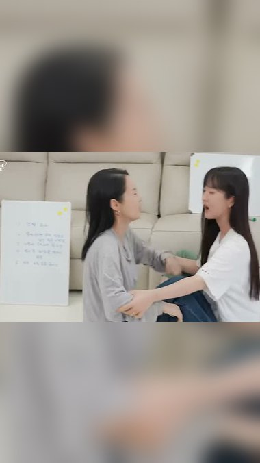
동안 모녀 · 원테이크 30초모녀 투샷 인사 → 레이저 대신 튜브 집기 → 면봉 도포(볼 클로즈업) → 딸 볼에 발라 주기 → 목 도포·투샷 웃음
동안 모녀 · 원테이크 30초
55세 김가연큰딸이랑 자매 소리 듣는 이유
0–30초 · 컷 없음
우리 모녀 동안 피부 비밀이 뭐냐고 다들 물어보는데,
출처: 김가연 임요환의 게임부부
추가 촬영 대사 · 실제 발언 인용 아님
카메라(원테이크): 거실 소파 모녀 투샷, 카메라 1대 핸드헬드. 투샷으로 시작 → 김가연이 바를 때 볼 클로즈업까지 천천히 다가감 → 딸에게 발라 줄 때 다시 투샷으로 빠짐. 컷 없이 한 번에 찍는다. 딸은 대사 없이 반응만.
김가연 원테이크 대사 · 30초 (이어 읽기) · 전체 대사김가연“우리 모녀 동안 피부 비밀이 뭐냐고 다들 물어보는데, 나 피부과 레이저 안 해. 기미는 그걸로 끝나는 게 아니더라고. 요즘 이거 발라. 이거 봐 봐, 면봉에 덜어서 기미 있는 데 톡톡 얹어 주면 돼. 딸이랑 같이 써. 너도 여기 좀 올라왔잖아, 이리 와 봐. 얼굴만 하지 말고 목까지. 이렇게 매일 하는 거야, 그게 비밀이야.”
엔드카드(신규): 마지막 CTA 뒤에 제품 이미지(우리 튜브 정면, side_tube 또는 제품 사진) + 큰 자막 “N차 완판 · 품절대란”을 1.5~2초 붙인다. 표기 길이에는 이 시간이 포함돼 있지 않다. N=실제 완판 횟수로 교체(확정 전 숫자 노출 금지). 근거: 소유 레퍼런스 나레이션 엔딩 “이미 여러 번 품절 대란 났다고” (refs/narration_transcripts_20261027.md). 이벤트 엔딩(F 등)은 혜택 화면 다음 마지막 컷.
시간
김가연 (말하는 중)
동시에 하는 동작
0–4초
김가연“우리 모녀 동안 피부 비밀이 뭐냐고 다들 물어보는데,”
딸과 나란히 앉아 카메라를 보며 딸 어깨에 손을 올린다
4–9초
김가연“나 피부과 레이저 안 해. 기미는 그걸로 끝나는 게 아니더라고.”
말하면서 테이블의 튜브를 집어 든다
9–15초
김가연“요즘 이거 발라. 이거 봐 봐, 면봉에 덜어서 기미 있는 데 톡톡 얹어 주면 돼.”
면봉에 덜어 자기 광대에 바른다. 카메라가 볼 클로즈업까지 다가간다
15–22초
김가연“딸이랑 같이 써. 너도 여기 좀 올라왔잖아, 이리 와 봐.”
딸 볼에 발라 준다. 카메라는 다시 투샷으로 빠진다
22–30초
김가연“얼굴만 하지 말고 목까지. 이렇게 매일 하는 거야, 그게 비밀이야.”
남은 양을 목에 펴 바르고 딸과 웃으며 카메라를 본다
말을 멈추고 동작만 하는 구간을 두지 않는다. 동작은 전부 말하는 도중에 한다. 이미지는 김가연 기존 영상의 시작 구도 참고.
같은 원테이크에 바꿔 걸 상단 대안
동안모녀 김가연이 딸과 / 매일 바른다는 ‘이것’
기미로 피부과 가본 적 없다는 / 김가연이 바르는 것
동안 가족
79세 엄마·55세 김가연·큰딸3대 동안 비결 중 하나가...
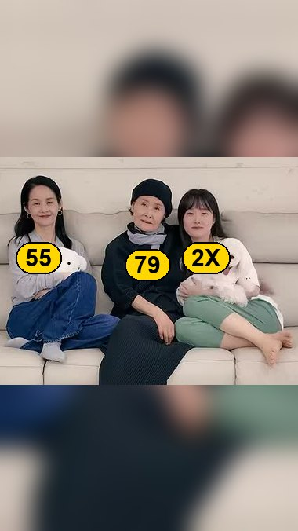
3대 동안 가족 · 원테이크 30초3대 소개 → 튜브 라벨 → 본인 광대 도포 → 엄마 손등·딸에게 건네기 → 목 도포·셋이 웃음
3대 동안 가족 · 원테이크 30초
79세 엄마·55세 김가연·큰딸3대 동안 비결 중 하나가...
0–30초 · 컷 없음
우리 엄마 일흔아홉, 나 쉰다섯, 우리 큰딸. 셋이 다니면 다 자매냐고 그래.
출처: 김가연 임요환의 게임부부
추가 촬영 대사 · 실제 발언 인용 아님
카메라(원테이크): 소파에 3대가 나란히 앉은 와이드 고정샷(삼각대). 김가연이 말하면서 튜브를 엄마·딸에게 건넨다. 바를 때만 줌 없이 김가연이 카메라 쪽으로 몸을 기울여 볼을 보여준다. 엄마·딸 동석 촬영이 가능할 때만 성립(가족 영상 갈무리를 끼우면 원테이크가 아님).
김가연 원테이크 대사 · 30초 (이어 읽기) · 전체 대사김가연“우리 엄마 일흔아홉, 나 쉰다섯, 우리 큰딸. 셋이 다니면 다 자매냐고 그래. 비결 하나만 말하라면 이거야. 레이저보다 매일 바르는 거. 이거 봐 봐, 기미 있는 데 이렇게 얹어서 살살 펴 주고, 엄마도 바르고, 딸도 바르고. 엄마 손등 줘 봐, 여기. 셋이 다 같이 쓰는 거야. 목까지 꼭 발라, 알았지?”
엔드카드(신규): 마지막 CTA 뒤에 제품 이미지(우리 튜브 정면, side_tube 또는 제품 사진) + 큰 자막 “N차 완판 · 품절대란”을 1.5~2초 붙인다. 표기 길이에는 이 시간이 포함돼 있지 않다. N=실제 완판 횟수로 교체(확정 전 숫자 노출 금지). 근거: 소유 레퍼런스 나레이션 엔딩 “이미 여러 번 품절 대란 났다고” (refs/narration_transcripts_20261027.md). 이벤트 엔딩(F 등)은 혜택 화면 다음 마지막 컷.
시간
김가연 (말하는 중)
동시에 하는 동작
0–5초
김가연“우리 엄마 일흔아홉, 나 쉰다섯, 우리 큰딸. 셋이 다니면 다 자매냐고 그래.”
한 사람씩 손으로 가리킨다
5–10초
김가연“비결 하나만 말하라면 이거야. 레이저보다 매일 바르는 거.”
튜브를 들어 카메라에 라벨을 보여준다
10–17초
김가연“이거 봐 봐, 기미 있는 데 이렇게 얹어서 살살 펴 주고,”
자기 광대에 바르며 카메라 쪽으로 몸을 기울인다
17–24초
김가연“엄마도 바르고, 딸도 바르고. 엄마 손등 줘 봐, 여기.”
엄마 손등에 덜어 주고 딸에게 튜브를 건넨다
24–30초
김가연“셋이 다 같이 쓰는 거야. 목까지 꼭 발라, 알았지?”
목에 펴 바르고 셋이 같이 웃으며 카메라를 본다
말을 멈추고 동작만 하는 구간을 두지 않는다. 동작은 전부 말하는 도중에 한다. 이미지는 김가연 기존 영상의 시작 구도 참고.
카메라(원테이크): 화장대 앞 정면 고정 액션캠, 가슴 위 미디엄샷. 시작하자마자 김가연이 카메라 쪽으로 얼굴을 들이밀어 광대를 보여주고, 뒤로 빠지며 제품을 든다. 바르는 동안에도 카메라를 보며 계속 말한다.
김가연 원테이크 대사 · 30초 (이어 읽기) · 전체 대사김가연“나도 기미 있어요. 봐 봐, 여기 광대에. 없는 척 안 해. 아이 낳고 나서부터 올라왔는데, 그때부터 그냥 매일 관리해. 요즘 바르는 게 이거야. 트라넥삼산 들어간 크림. 면봉에 이만큼 덜어서, 이거 봐 봐, 기미 있는 데 이렇게 얹어 주고 살살 펴. 실제로 내가 쓰는 화장품이야. 목에도 발라. 목도 나이 먹거든.”
엔드카드(신규): 마지막 CTA 뒤에 제품 이미지(우리 튜브 정면, side_tube 또는 제품 사진) + 큰 자막 “N차 완판 · 품절대란”을 1.5~2초 붙인다. 표기 길이에는 이 시간이 포함돼 있지 않다. N=실제 완판 횟수로 교체(확정 전 숫자 노출 금지). 근거: 소유 레퍼런스 나레이션 엔딩 “이미 여러 번 품절 대란 났다고” (refs/narration_transcripts_20261027.md). 이벤트 엔딩(F 등)은 혜택 화면 다음 마지막 컷.
시간
김가연 (말하는 중)
동시에 하는 동작
0–5초
김가연“나도 기미 있어요. 봐 봐, 여기 광대에. 없는 척 안 해.”
카메라 쪽으로 얼굴을 가까이 대고 광대를 손끝으로 짚는다
5–11초
김가연“아이 낳고 나서부터 올라왔는데, 그때부터 그냥 매일 관리해.”
몸을 뒤로 빼면서 튜브를 집는다
11–18초
김가연“요즘 바르는 게 이거야. 트라넥삼산 들어간 크림. 면봉에 이만큼 덜어서,”
라벨을 카메라 쪽으로 보여 주고 면봉에 덜어 낸다
18–25초
김가연“이거 봐 봐, 기미 있는 데 이렇게 얹어 주고 살살 펴. 실제로 내가 쓰는 화장품이야.”
광대에 바르면서 카메라를 보고 말한다
25–30초
김가연“목에도 발라. 목도 나이 먹거든.”
손에 남은 양을 목에 펴 바르고 웃는다
말을 멈추고 동작만 하는 구간을 두지 않는다. 동작은 전부 말하는 도중에 한다. 이미지는 김가연 기존 영상의 시작 구도 참고.
같은 원테이크에 바꿔 걸 상단 대안
산후 기미 달고 살던 김가연 / 목에도 바르는 ‘이것’?
동안 김가연이 / 레이저 대신 고른 화장품?
타고난 피부 vs 관리
타고난 피부인 줄 알았죠?김가연의 관리 비결
관리 고백 (= 나도 관리 엄청 해) · 원테이크 30초얼굴 클로즈업 고백 → 볼 짚기 → 튜브·면봉 도포 → 손으로 펴기 → 목 도포
관리 고백 (= 나도 관리 엄청 해) · 원테이크 30초
타고난 피부인 줄 알았죠?김가연의 관리 비결
0–30초 · 컷 없음
사람들이 나 보고 피부 타고났다고 하는데, 아니야. 나 관리 엄청 해.
출처: 김가연 임요환의 게임부부
추가 촬영 대사 · 실제 발언 인용 아님
카메라(원테이크): 깨끗한 얼굴 클로즈업에서 시작해 말하는 동안 카메라가 천천히 뒤로 빠져 미디엄샷이 된다(핸드헬드 1대). 제품을 들고 바르는 동작까지 같은 프레임에서 이어진다.
김가연 원테이크 대사 · 30초 (이어 읽기) · 전체 대사김가연“사람들이 나 보고 피부 타고났다고 하는데, 아니야. 나 관리 엄청 해. 특히 기미. 이건 한 번에 안 없어지니까 매일 해야 돼. 요즘 내가 바르는 게 이거야. 이거 봐 봐, 면봉에 묻혀서 기미 있는 데만 콕콕. 그다음에 손으로 살살 펴 주면 끝. 아침저녁 두 번. 실제로 내가 쓰는 화장품이야. 얼굴 끝나면 목까지. 타고난 거 아니고, 이렇게 하는 거야.”
엔드카드(신규): 마지막 CTA 뒤에 제품 이미지(우리 튜브 정면, side_tube 또는 제품 사진) + 큰 자막 “N차 완판 · 품절대란”을 1.5~2초 붙인다. 표기 길이에는 이 시간이 포함돼 있지 않다. N=실제 완판 횟수로 교체(확정 전 숫자 노출 금지). 근거: 소유 레퍼런스 나레이션 엔딩 “이미 여러 번 품절 대란 났다고” (refs/narration_transcripts_20261027.md). 이벤트 엔딩(F 등)은 혜택 화면 다음 마지막 컷.
시간
김가연 (말하는 중)
동시에 하는 동작
0–5초
김가연“사람들이 나 보고 피부 타고났다고 하는데, 아니야. 나 관리 엄청 해.”
얼굴 클로즈업. 말하는 동안 카메라가 천천히 빠진다
5–10초
김가연“특히 기미. 이건 한 번에 안 없어지니까 매일 해야 돼.”
손가락으로 볼을 짚는다
10–17초
김가연“요즘 내가 바르는 게 이거야. 이거 봐 봐, 면봉에 묻혀서 기미 있는 데만 콕콕.”
튜브를 들어 보이고 면봉에 덜어 바른다
17–24초
김가연“그다음에 손으로 살살 펴 주면 끝. 아침저녁 두 번. 실제로 내가 쓰는 화장품이야.”
손가락으로 펴 바르며 카메라를 본다
24–30초
김가연“얼굴 끝나면 목까지. 타고난 거 아니고, 이렇게 하는 거야.”
목에 펴 바르고 정면을 본다
말을 멈추고 동작만 하는 구간을 두지 않는다. 동작은 전부 말하는 도중에 한다. 이미지는 김가연 기존 영상의 시작 구도 참고.
레이저 통념 반전
기미엔 무조건 레이저?ㄴㄴ 여배우는 이렇게 관리함
레이저 반전 · 원테이크 30초레이저 통념 반박 → 광대 짚으며 기미 설명 → 얼굴 옆 튜브 → 그 자리 도포 → 2주 변화 한마디
레이저 반전 · 원테이크 30초
기미엔 무조건 레이저?ㄴㄴ 여배우는 이렇게 관리함
0–30초 · 컷 없음
기미 생기면 다들 레이저부터 찾지? 아니야, 레이저가 답이 아니야.
출처: 김가연 임요환의 게임부부
추가 촬영 대사 · 실제 발언 인용 아님
카메라(원테이크): 정면 미디엄샷 고정. 직설 톤으로 시작해 기미 부위를 보여줄 때 카메라 쪽으로 다가오고, 제품을 얼굴 옆에 든 뒤 그 자리에서 바른다. 마지막은 바른 쪽 볼을 카메라에 보여 주며 웃는다.
김가연 원테이크 대사 · 30초 (이어 읽기) · 전체 대사김가연“기미 생기면 다들 레이저부터 찾지? 아니야, 레이저가 답이 아니야. 레이저 하면 기미가 오히려 더 올라올 수도 있어. 기미는 한 번에 끝나는 게 아니거든. 기미는 꾸준한 화장품 관리야. 그래서 나는 이거 매일 발라. 아침저녁으로 기미 있는 데 이렇게 얹고, 살살 펴 주고. 2주 꾸준히 쓰니까 확 변해. 진짜야, 레이저 말고 꾸준히.”
엔드카드(신규): 마지막 CTA 뒤에 제품 이미지(우리 튜브 정면, side_tube 또는 제품 사진) + 큰 자막 “N차 완판 · 품절대란”을 1.5~2초 붙인다. 표기 길이에는 이 시간이 포함돼 있지 않다. N=실제 완판 횟수로 교체(확정 전 숫자 노출 금지). 근거: 소유 레퍼런스 나레이션 엔딩 “이미 여러 번 품절 대란 났다고” (refs/narration_transcripts_20261027.md). 이벤트 엔딩(F 등)은 혜택 화면 다음 마지막 컷.
시간
김가연 (말하는 중)
동시에 하는 동작
0–5초
김가연“기미 생기면 다들 레이저부터 찾지? 아니야, 레이저가 답이 아니야.”
정면을 보며 손을 내젓는다
5–11초
김가연“레이저 하면 기미가 오히려 더 올라올 수도 있어. 기미는 한 번에 끝나는 게 아니거든.”
카메라 쪽으로 몸을 기울이고 손끝으로 광대를 짚는다
11–18초
김가연“기미는 꾸준한 화장품 관리야. 그래서 나는 이거 매일 발라.”
튜브를 얼굴 옆에 들어 라벨을 보여준다
18–25초
김가연“아침저녁으로 기미 있는 데 이렇게 얹고, 살살 펴 주고.”
그 자리에서 광대에 짜서 펴 바른다
25–30초
김가연“2주 꾸준히 쓰니까 확 변해. 진짜야, 레이저 말고 꾸준히.”
바른 쪽 볼을 카메라에 보여 주며 웃는다
말을 멈추고 동작만 하는 구간을 두지 않는다. 동작은 전부 말하는 도중에 한다. 이미지는 김가연 기존 영상의 시작 구도 참고.
이전 6~7컷 구성 초안(동안 모녀·3대·단독·관리 고백)은 페이지 아래 이전 컷 구성 초안에 보관했다. 대본상 무발화 구간이 29~40%라 원테이크판으로 대체.
참고 · 기록
빠진 안 (약한 상단 문구) 본문 목록에서 제외 · 카드는 보관
10/28 제외: “동안 김가연의 / 관리 루틴?”, “동안 김가연, / 관리할 땐?” (상단 문구가 약하다는 판단). 컷 구성은 참고용으로 남긴다.
10/28 제외: “레이저가 답이 아니라는 / 김가연???” (P3·P4·L2). 약하다는 판단. 같은 원테이크(레이저 반전)는 상단을 1순위 문구 “기미엔 무조건 레이저? / ㄴㄴ 여배우는 이렇게 관리함”으로 교체했다.
레이저가 답이 아니라는김가연???
출처: 김가연 임요환의 게임부부
L2 · 선택 궁금증 · 상단 문구 테스트 후보
레이저 통념 반전
레이저가 답이 아니라는김가연???
P3 · P4(동안 여배우???) · 36초E1 본편 그대로, 상단만 교체
02 · 레이저 이야기 연결형 · P3 / P4
레이저가 답이 아니라는김가연???
0–3초 · 같은 첫 컷
기미엔 무조건 레이저?
출처: 김가연 임요환의 게임부부
P3 · 김가연 이름형 상단만 교체 · 본문은 E1 동일 36초안
0–3초 · 공통 읽는 대사 나레이션기미엔 무조건 레이저? 그런데 김가연은…김가연(다음 컷) “…이거 약국에도 있어.”자막기미엔 무조건 레이저?이어서 읽는 E1 컷별 대본 ↗
레이저가 답이 아니라는동안 여배우???
0–3초 · 같은 첫 컷
기미엔 무조건 레이저?
출처: 김가연 임요환의 게임부부
P4 · 동안 여배우형 상단만 교체 · 본문은 E1 동일 36초안
0–3초 · 공통 읽는 대사 나레이션기미엔 무조건 레이저? 그런데 김가연은…김가연(다음 컷) “…이거 약국에도 있어.”자막기미엔 무조건 레이저?이어서 읽는 E1 컷별 대본 ↗
마무리 근거: 한혜진 아누아 Meta 나레이션 “한혜진 유튜브 공개 후 약국들은 전부 매진이라는데 / 여기 공급처 비밀링크에서 저렴하게 쟁여두세요” (refs/narration_transcripts_20261027.md)
엔드카드(신규): 마지막 CTA 뒤에 제품 이미지(우리 튜브 정면, side_tube 또는 제품 사진) + 큰 자막 “N차 완판 · 품절대란”을 1.5~2초 붙인다. 표기 길이에는 이 시간이 포함돼 있지 않다. N=실제 완판 횟수로 교체(확정 전 숫자 노출 금지). 근거: 소유 레퍼런스 나레이션 엔딩 “이미 여러 번 품절 대란 났다고” (refs/narration_transcripts_20261027.md). 이벤트 엔딩(F 등)은 혜택 화면 다음 마지막 컷.
A · 19초본인 얼굴 → 닦기 접사 → 제품·패키지 → 도포 → 제품 든 본인 선택 → 얼굴 CTA
추가안 A · 김가연 얼굴 → 우리 닦기 광고 → 본인 선택 → 제품 확인
19초 · 첫 동작으로 멈추게 하고, 직접 바르는 모습과 본인 선택을 거쳐 행동을 요청한다. 실제 발화 속도를 고려해 기존 15초안에서 늘린 편집 목표다.
기승전결: 기: 김가연의 관리에 대한 호기심 / 승: 닦기 동작으로 주목 / 전: 제품·실제 도포·본인 선택으로 연결 / 결: 얼굴로 돌아와 제품 확인을 요청. 풍자의 후반 추천→행동 촉구 구조를 참고하되 품절 주장은 가져오지 않는다.
전체 나레이션(이어 읽기)
동안 김가연, 대체 뭘 바를까요?이 장면부터 보세요. 김가연이 꺼낸 건…“…이거 약국에도 있어.”바르면서 하는 말이…“이거 봐 봐, 기미가 옅어지잖아.”그리고 한마디.“실제로 내가 쓰는 화장품.”김가연 영상 공개 후 약국에선 품절이 빠르다는데… 여기 링크에서 할인가로 쟁여두세요.
C · 21초얼굴 → 제형 낙하 → 제품·패키지 → 펴 바르기 → 본인 한마디 → 인물+제품 안내
추가안 C · 나레이션 질문 → 실제 사용 → 본인 한마디 → 나레이션 결론
21초 · 나레이션 질문 → 제품을 소개하는 본인 멘트 → 도포·실사용 → 나레이션 안내. 기존 16초안보다 발화 시간을 늘렸고, 본인 대사는 기존 요청 ⑥·①·②를 우선한다.
기승전결: 기: 무엇을 바르는지 질문 / 승: 제형과 제품 공개 / 전: 사용 장면과 본인 대사 / 결: 질문의 답인 그 크림·사용법으로 안내. 한혜진 활용 광고의 후반 나레이션이 제품 장면 위에서 구매 경로를 말하는 방식을 참고한다. 원본의 매진·가격 주장은 차용하지 않는다.
전체 나레이션(이어 읽기)
동안 김가연은 뭘 바를까요?얼굴 말고, 바르는 걸 보면…“…이거 약국에도 있어.”어떻게 바르냐면…“이거 봐 봐, 기미가 옅어지잖아.”한 줄로 정리하면…“실제로 내가 쓰는 화장품.”영상 공개 후 약국에선 품절이 빠르다는데… 여기 링크에서 할인가로 쟁여두세요.
15–21초 · 그대로 읽는 대본나레이션영상 공개 후 약국에선 품절이 빠르다는데… 여기 링크에서 할인가로 쟁여두세요.자막그 크림과 바르는 방법 확인
이 컷을 고른 이유 · 공유/저장 · 음성 초안
컷
선정 판단
원본 반응 기록
음성 초안
01 · 김가연 얼굴 먼저
김가연을 알아보게 하는 컷은 본인 얼굴로 유지.
성과 판정 대상 아님
나레이션동안 김가연은 뭘 바를까요?
02 · 제형이 떨어지는 순간
손등과 제형 낙하가 크게 보여 소량·점도 설명에 적합. 이 역할에는 소유 광고 컷을 남김.
공유330 · 저장395 = 725 · 10/13 측정
나레이션얼굴 말고, 바르는 걸 보면…
03 · 제품 정면 보여주기
병과 패키지가 화면을 채우고 글자가 정면에 보임. 채정안 선크림의 먼 제품 컷보다 제품을 크게 보여주기에 적합.
공유·저장 미확인 · 10/27 활성 표시, 시작 10/8
김가연“…이거 약국에도 있어.”
04 · 펴 바르는 동작
손가락·크림·볼이 크게 보임. 화장품 사용 동작 설명에는 패치 부착보다 직접적.
공유378 · 저장319 = 697 · 10/27 측정
나레이션어떻게 바르냐면…김가연“이거 봐 봐, 기미가 옅어지잖아.”
05 · 전 · 김가연 한마디
나레이션의 질문 뒤 실제 원본 발언으로 제품 선택을 연결한다. 최종 사용 문장은 원문·해당 상품 대조 후 편집.
김가연 원본 구도 · 성과 판정 대상 아님
나레이션한 줄로 정리하면…김가연“실제로 내가 쓰는 화장품.”
06 · 제품 든 김가연 + CTA
앞 컷에서 김가연이 우리 제품(튜브)을 들고 있는 장면을 그대로 다시 쓰고, 그 위에 구매 안내(CTA)만 띄운다. 새로 촬영하지 않는다.
구조 참고: 한혜진 광고2377215103087916 · 공유저장 미확인
나레이션영상 공개 후 약국에선 품절이 빠르다는데… 여기 링크에서 할인가로 쟁여두세요.
베스트는 이 콘티의 역할·구도 적합성 판단이다. 공유·저장은 원본 영상 전체의 반응이며 개별 컷의 성과가 아니다. 신규 조합 성과는 미검증.
전체 원본 36편 · 584프레임 검토와 선정·탈락 기록
확보된 원본 36개 파일의 시작부터 끝까지 2초 간격으로 추출한 584프레임을 시각 검토했다. 중복 편집본과 비뷰티 후보도 제외 이유를 기록했다. 선정 컷은 원본의 지정 시점으로 별도 추출해 다시 확인했다. 인터넷의 모든 광고를 봤다는 뜻이나 원음 전체 청취 완료를 뜻하지 않는다.
이미숙 5초 볼을 만지는 반응 선정. 31초 필름 제형은 크림과 달라 이번 제형 컷에 미선정.
공유·저장 미확인 · 10/27 활성 표시, 시작 8/2
연예인 활용 레퍼런스의 끝맺음 · 4가지 비교
연예인 활용 레퍼런스의 끝맺음 · 4가지 비교
인물의 추천·체감·반응, 마지막 설명과 행동 요청까지 비교한다. 메디큐브는 비연예인 제품 영상이므로 이 비교에서 제외했다. 아래 원문은 AI 전사·판독이며, ‘우리 적용안’은 별도 제작 제안이다.
소유 올리브영 세럼
AI 분석상 · 손 + 제품(얼굴 없음)
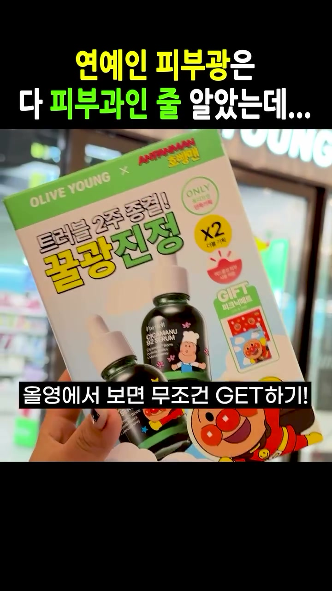
끝 0.4초 전 · 원본 52.8초
연예인 피부광의 비결로 꾸준한 관리를 짚으며 호빵맨 콜라보 세럼 기획세트와 증정품을 소개하고 올리브영 구매를 권장한다.
공유 330 · 저장 395 = 725 · 10/13
끝 대사·문구·훅 연결·우리 적용안
마지막 전개 연예인 피부광의 비결로 꾸준한 관리를 짚으며 호빵맨 콜라보 세럼 기획세트와 증정품을 소개하고 올리브영 구매를 권장한다.
마지막 음성 · 모델 전사 올영에서 보면 무조건 GET하기!
끝 화면 상단 문구 연예인 피부광은 다 피부과인 줄 알았는데...
끝 화면 하단 문구 올영에서 보면 무조건 GET하기!
기타 화면 문구·로고 OLIVE YOUNG x ANPANMAN 호빵맨, 트러블 2주 종결! 꿀광진정, ONLY 올리브영 단독기획, X2 더블기획, GIFT 피크닉매트
마지막 행동·화면 올리브영 매장 앞에서 호빵맨 콜라보 파넬 시카마누 세럼 기획세트 패키지를 손에 들고 있는 모습
CTA 원문 · 구매 제안 / 음성 + 화면 문구 올영에서 보면 무조건 GET하기!
첫 3초 훅 연예인 피부광은 다 피부과인 줄 알았는데... / 소유 피부 무슨 일이야...
훅을 어떻게 회수하는가 · 분석 연예인의 피부광 비결이 비싼 피부과인 줄 알았으나 꾸준한 홈케어 세럼 제품 사용 및 올리브영 구매 권유로 자연스럽게 연결됨.
원본 마지막 최대 12초의 음성·화면·자막을 함께 분석했다. 제품 화면이라는 이유만으로 CTA가 없다고 판단하지 않는다. 마지막 음성 전사 신뢰도: 높음. AI 영상·음성 분석이며 사람이 전체 원음을 직접 청취해 확정한 결과는 아니다.
우리 적용안 · 제작 제안, 원본 발언 아님 앞에서 사용·선택의 이유를 설명한 뒤 손에 든 제품과 구입 장소 또는 안내 문구를 함께 보여주는 안. 손+제품 사진만 떼어내지 않고 직전 결론과 안내 음성을 같이 연결한다. 안내는 실제 판매 조건이 정해진 뒤 별도 음성·자막으로 작성한다.
이 순서로 15초 초안을 편집한다. 김가연을 짧게 보여준 직후 기존 닦기 광고의 동작을 넣고, 제품을 식별시킨 다음 김가연의 실제 사용·설명으로 이어간다. 아래는 정지 컷 6개로 보는 편집 지시안이다.
상단 고정 문구 초안 동안 김가연, 관리 루틴은?
이미지는 편집 순서 참고다. 김가연 공개 영상은 구도 참고이며 실제 광고 촬영본으로 교체한다. 닦기 이미지는 보유 검토본으로 집행 최종본과 대조 후 소스를 확정한다. 아래 나레이션은 새 편집용 초안이며 기존 김가연 발언으로 표시하지 않는다.
전체 나레이션(이어 읽기)
동안 김가연의 관리 루틴……관리하는 장면부터 볼까요?여기 쓰인 건 글로우덤 기미크림.볼에 직접 펴 바르는 게 루틴인데, 본인 말로는…(촬영에서 확보한 실제 발언 한 문장)영상 공개 후 약국에선 품절이 빠르다는데… 여기 링크에서 할인가로 쟁여두세요.
01 · 0–0.8초 · 김가연 얼굴공개 영상 구도 참고
누구인지 한눈에
화면: 얼굴을 짧게 보여주고 대사가 끝나기 전에 전환.
나레이션동안 김가연의 관리 루틴…자막“김가연의 관리 루틴”
확보: 김가연 광고 촬영본의 정면 컷.
02 · 0.8–3.5초 · 우리 닦기 광고보유 검토본 9.8초 · 최종본 대조 필요
바로 닦이는 동작
화면: 손이 움직이는 순간부터 닦기를 끝내는 순간까지. 준비 구간은 제외.
나레이션…관리하는 장면부터 볼까요?자막“이 동작에 주목”03 · 3.5–5초 · 제품 식별보유 제품 이미지
어떤 제품인지 바로
화면: 제품명과 튜브가 읽히는 가까운 컷.
나레이션여기 쓰인 건 글로우덤 기미크림.자막“글로우덤 기미크림”04 · 5–9초 · 김가연 직접 도포
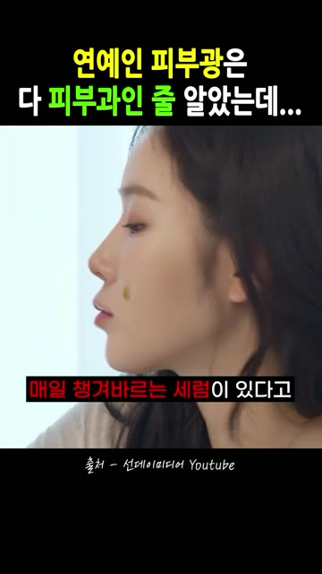
동작 레퍼런스 · 실제 촬영은 김가연
볼 가까이, 직접 바르기
화면: 얼굴을 가까이 가져와 볼의 신경 쓰이는 부위에 직접 펴 바른다.
나레이션볼에 직접 펴 바르는 게 루틴인데, 본인 말로는…자막“직접 바르는 방법”
확보: 아래 8초 연속 촬영 요청안에서 필요한 4초를 사용.
05 · 9–12초 · 본인 사용 설명공개 구도 참고 · 제품 경험 발언 아님
실제 경험 한 문장
화면: 손을 내리고 얼굴을 보여주며 설명.
김가연(촬영에서 확보한 실제 발언 한 문장)
촬영 질문: “평소 어느 부위가 신경 쓰였고, 언제 어떻게 사용하세요?”
자막실제 답변 중 사용 부위·방법을 옮긴다.06 · 12–15초 · 제품·안내보유 제품 이미지
제품을 기억하게 마무리
화면: 제품을 다시 보여주고 안내 문구 고정.
나레이션영상 공개 후 약국에선 품절이 빠르다는데… 여기 링크에서 할인가로 쟁여두세요.자막“글로우덤 기미크림 · 자세히 보기”
10/26 선정 · 추가 촬영 1순위 → 위 광고의 04·05번에 사용
김가연이 얼굴을 가까이 가져와 볼의 기미 부위에 직접 바르는 컷
8초 연속 촬영 원본을 요청한다. 광고에는 04번 도포와 05번 마무리 구간에 나눠 쓴다.
촬영 0–2초 · 얼굴 가까이 얼굴 전체가 보이게 다가오며 볼을 약간 돌린다. 김가연 공개 구도 참고.촬영 2–6초 · 직접 펴 바르기 신경 쓰이는 부위에 직접 도포. 다른 인물의 동작 참고이며 김가연 촬영 필요.촬영 6–8초 · 손 내리고 유지 같은 구도에서 얼굴을 2초 유지. 사용 경험 답변은 별도로 받는다.
같이 받을 컷: 이 바르는 컷과 이어 붙일 수 있게 맑은 생얼 피부가 나오면 좋다. 화장 없이 피부결이 보이는 얼굴로 바르기 전·후 유지 구간을 찍어 달라고 요청(사용자 10/29).
촬영 요청 문구: “얼굴 전체가 보이게 카메라 쪽으로 살짝 다가와 주세요. 볼을 약간 돌려 바를 부위를 보여주고 제품을 직접 펴 발라주세요. 손을 내린 뒤 얼굴을 2초 유지해주세요. 전체 동작을 끊지 않고 8초 정도 촬영해주세요.”
이 안으로 어떻게 진행하나
소스 확정: 기존 닦기 광고 최종본·자막 없는 소스 확인. 김가연 얼굴·도포·실제 경험 원본 확보.
1차 편집: 위 6컷으로 15초 H6 초안 제작. 상단 고정 문구형은 4:5, 얼굴과 동작을 가리지 않게 배치.
비교본: 같은 길이·문구·후반부를 유지하고 02번만 설명 컷으로 바꿔 닦기 삽입 유무를 비교.
판정: 같은 게시 후 경과 시점의 공유 수·저장 수·합계를 기록. 구매 성과는 이번 폼 판정 조건으로 요구하지 않는다.
다음 편집·촬영 진행안이다. 실제 발언과 집행 최종 소스를 아직 확정하지 않은 구간은 위에 표시했다. 촬영 8초와 광고 전체 15초를 혼동하지 않는다.
10/26 선정 이후 10/27 사용자 피드백과 원본 검증을 반영한 기록. 현재 실행안은 위 6컷이다. 과거 제안은 검증 완료나 사용자 최종 승인으로 소급하지 않는다.
10/26 · 추가 촬영 우선순위: 얼굴 가까이 → 볼에 직접 도포 → 손 내리고 유지하는 8초 연속 원본을 제안했다. 소유 활용 광고의 피부 접사·도포·얼굴 확인을 참고했다. 현재는 광고 첫 8초를 그대로 채우는 안이 아니라 04·05번 본편 소재로 사용한다.
반전·유머 훅: ‘타고난 동안이 아니라 관리’와 웃긴 반응 장면을 H1~H5로 기록했다. 실제 김가연 발언이 아닌 촬영·카피 초안이다. 웃긴 장면이면 무조건 반응이 높다는 결론은 보류했다.
기존 광고 재사용: 사용자가 제안한 것은 김가연에게 기미 닦기 촬영을 새로 시키는 것이 아니라, 우리 기존 광고의 닦기 컷을 김가연 얼굴 뒤에 삽입하는 방식이다. H6와 현재 실행안에 채택했다.
시럽 원본의 연결: 시작 인물 → 약 1초 이후 시럽 붓기. 설명 음성이 동작 화면 위로 이어진다. 처음 5초 간격 샘플링에서 놓친 접사를 초반 0.1초 간격으로 재확인했다. 화면에는 원본 0초 인물 / 1.5초 붓기, 정지 컷 두 개로 보여준다.
표시 오류와 수정: 정확히 1초에서 추출한 이미지가 아직 인물 컷이었고 캐시된 파일을 재사용했다. 이후 붓기 영상만 넣거나 연결 영상으로 바꾼 것은 사용자 요청과 달랐다. 최종 요구는 두 장의 정지 컷이며, 현재 인물과 붓기 이미지를 각각 육안 확인했다.
판정 지표: 구매·CPA를 요구하던 조건을 수정했다. 이번 폼 검증은 공유 수·저장 수·합계로 판단한다. 측정일·계정·게시일을 함께 기록하고 비표시 수치를 0으로 만들지 않는다.
소유 725건: 공유 330·저장 395는 서로 다른 인물의 사용 장면을 연결한 선례다. 큰 반응의 대표 사례나 컷만의 효과 근거로는 채택하지 않는다.
더 큰 반응 탐색: 쿨링 패드는 공유 636·저장 813=1,449건. 첫 화면 동작과 사용·마무리 연결을 참고한다. 이민정 스프레드 788건은 725보다 소폭 높은 사례로만 기록한다. 팬덤 영향이 큰 브랜드 화보 사례는 사용자 요청으로 현재 페이지의 사례에서 제외했다.
현재 판단: 얼굴로 인물을 식별시킨 직후 기존 닦기 동작으로 전환하는 15초 H6를 먼저 편집한다. ‘연예인 얼굴 직후 별도 기미 닦기 소스’ 조합 자체의 큰 공유·저장 반응이 이미 입증된 것은 아니므로 비교본을 만든다.
미확정 소재: 페이지의 닦기 이미지는 보유 검토본이다. 실제 집행 최종본과의 일치, 김가연 광고 촬영본·사용 경험 발언을 확인해야 최종 편집이 가능하다. 공개 김가연 영상·타인 도포 레퍼런스를 실제 제품 경험 증거로 기록하지 않는다.
판정: 우선 테스트할 근거는 있다. 이미 검증된 흥행 포맷으로 확정할 수는 없다. ‘유명인의 외모에 대한 예상 → 예상 뒤집기 → 관리 방법 공개’는 반응이 기록된 유사 소재가 있다. ‘화장품은 다른 상품보다 더 자극적이어야 한다’, ‘웃긴 장면이면 더 잘된다’는 비교 근거를 아직 확보하지 못했다. 웃긴 첫 컷을 쓰고 공유·저장이 기록된 소유 사례는 H4에 추가했다.
가까운 반응 사례 — 소유:원문. 확보 전사 기준 0–4초 감량 발언 → 4–8초 관리·피부 상태 해설 → 8–11초 피부를 본 반응 → 12–18초 감량 후 피부에 대한 예상과 다른 모습을 설명 → 약 18초 이후 홈케어·세럼. 10/13 기록 공유 330·저장 395. ‘예상 뒤집기 → 관리’의 유사 근거이며 ‘타고난 동안 아니다’라는 동일 대사나 웃긴 오프닝의 검증은 아니다.
거의 같은 메시지의 사용 전례 — 김소연·아이오페:2019-09-26 광고 소개 기사에 타고남보다 노력으로 피부를 관리한다는 내용이 나온다. 광고 메시지의 전례만 확인했다. 인스타 2차광고·실제 초반 컷·시청 유지율·매출의 근거로 쓰지 않는다.
대사와 사용의 연결 전례 — 채정안 POLA:광고 원문. 관리 경험 토크 → 눈가를 짚음 → 도포. 새 촬영에서 받아야 할 장면의 참고다. 공개 성과 수치가 없어 성공 사례로 판정하지 않는다.
반대 사례 — 강소라:비결 공개형 편집본 조회 57,737. 10/26 수집한 같은 계정의 조회 확인 11편 중 8위, 중앙값 60,348 미만. 주제와 게시 시점이 다른 불완전 비교지만, ‘유명인+외모 비결’이면 무조건 터진다는 주장은 지지하지 않는다.
해석 한계: 같은 소유 소재도 두 계정에서 공유+저장 725와 373으로 달랐다. 도달·계정·게시 기간을 통제하지 않은 반응 수치이며, 훅만의 인과효과로 단정하지 않는다. 이번 레퍼런스의 반응 판정은 공유·저장 각각의 수와 합계로 한다.
편집 판단: “동안 아니에요”에서 끝내면 무엇을 부정하는지 모호하다. “타고난 동안 아니에요”로 기대를 뒤집고 바로 관리 이야기로 연결하는 안을 우선한다. 이는 문장 연결에 대한 판단이며 시청률 우위가 검증됐다는 뜻은 아니다. 관리 전반의 경험을 특정 크림 하나가 동안을 만들었다는 증언으로 바꾸지 않는다.
아래 대사는 새 촬영 요청용 초안이다. 기존 김가연 발언이 아니며, 본인의 실제 경험에 맞는 말로 촬영한다. 레퍼런스의 음성 분석은 자동 전사와 화면 대조 기준이다.
H1 · 본인 반전형 — “타고난 동안 아니에요”
우선 테스트 · 사용자 아이디어의 핵심
0–2초 / 얼굴 클로즈업: 김가연이 손사래. 김가연“저, 타고난 동안 아니에요.” 자막은 ‘타고난’만 강조.
2–4초 / 짧은 정적 뒤 정면:김가연“관리한 거라니까?” 웃는 표정을 조금 남긴다.
4–6초 / 얼굴에서 손동작으로:나레이션그럼 평소엔 어떻게 관리하는데?
6–8초 / 실제 부위를 짚는 컷: 본인이 설명할 관리 부위를 보여주고 공통 본편으로 연결.
전체 대사(이어 읽기)
“저, 타고난 동안 아니에요.”“관리한 거라니까?”그럼 평소엔 어떻게 관리하는데?
요청 컷: 손사래+대사 연속 테이크, 웃는 반응 2초, 얼굴의 관리 부위를 짚는 테이크. 확인할 것: 반전 대사 이후에도 다음 장면을 보는지.
H2 · 별도 나레이션 반전형 — “동안 김가연, 타고난 게 아니라는데?”
우선 테스트 · 육성과 별도 해설의 역할 비교
0–2초 / 얼굴이 잘 보이는 자연스러운 장면:나레이션동안으로 유명한 김가연.
2–4초 / 정면 발언 컷:김가연“타고난 거 아니에요.”
4–6초 / 웃는 반응 또는 관리 동작:나레이션본인은 관리한 거라는데?
6–8초 / 부위를 짚는 컷:나레이션그 관리 루틴을 보면… → 공통 본편.
전체 대사(이어 읽기)
동안으로 유명한 김가연.“타고난 거 아니에요.”본인은 관리한 거라는데?그 관리 루틴을 보면…
요청 컷: 자연스러운 얼굴, 짧은 부정 발언, 설명 없는 사용 동작. 확인할 것: H1보다 나레이션을 먼저 두는 편이 관심을 유지시키는지. 얼굴·순서·음성 모두 달라지는 오프닝 구성 비교이며 한 요소의 효과로 해석하지 않는다.
H3 · 받아치기형 — “타고났네요?” / “내가 얼마나 관리하는데!”
탐색 후보 · 대화와 반응 컷 필요
0–2초 / 옆 사람 질문, 김가연 얼굴 유지:상대“언니는 그냥 타고났네요?”
2–4초 / 김가연이 바로 쳐다봄:김가연“내가 얼마나 관리하는데!”
4–6초 / 상대 웃음, 김가연 반응:상대“그럼 하나만 알려줘요.”
6–8초 / 손이 관리 부위로: 김가연이 본인의 실제 관리 방법을 꺼내며 공통 본편.
전체 대사(이어 읽기)
“언니는 그냥 타고났네요?”“내가 얼마나 관리하는데!”“그럼 하나만 알려줘요.”
요청 컷: 질문부터 대답까지 한 번에 촬영하고 표정이 끝날 때까지 유지. 확인할 것: 웃는 반응 뒤 제품 장면에서 이탈하는지. 표정만 웃기고 관리 이야기가 끊기면 수정.
H4 · 웃긴 표정형 — “동안 비결 물었더니 정색함ㅋㅋ”
탐색 후보 · 웃긴 첫 컷을 쓴 반응 사례는 확인, 웃음의 인과효과는 미확인
소유 레퍼런스는 0초 누운 얼굴과 ‘배고파’ 자막 → 감량 이야기 → 피부 접사·반응 짤 → 약 18초 홈케어로 연결한다. 10/13 공유 254·저장 71. 웃긴 첫 컷과 관리 설명을 함께 쓴 실제 사례다. 웃긴 컷이 없던 동일 조건의 비교본은 없어 웃음 때문에 반응이 올랐다고 확정하지 않는다.
0–2초 / 질문에 과장되게 놀라거나 억울해하는 표정: 상단 초안 “동안 비결 물었더니 정색함ㅋㅋ”. 실제 표정과 맞을 때 사용.
2–4초 / 바로 이어지는 원래 반응:김가연“타고났다 그러면 좀 억울하지!”
4–6초 / 웃으며 관리 이야기:김가연“관리한 거라니까.”
6–8초 / 질문과 사용 동작:상대“어떻게요?” → 공통 본편.
전체 대사(이어 읽기)
“타고났다 그러면 좀 억울하지!”“관리한 거라니까.”“어떻게요?”
요청 컷: 재미있는 질문·반응의 앞뒤 맥락이 있는 연속 촬영. 확인할 것: 3초 시청만 오르고 8초 이후 유지·클릭이 떨어지면 웃음 훅을 승자로 채택하지 않는다.
H5 · 과장 질문형 — “언니 혼자 시간 멈췄어요?”
탐색 후보 · 말도 안 되는 질문으로 여는 안
0–2초 / 김가연 얼굴에 상대 질문:상대“언니 혼자 시간 멈췄어요?”
2–4초 / 김가연 웃으며 받아침:김가연“멈추긴 뭘 멈춰. 나도 관리해!”
4–6초 / 상대 질문:상대“집에서도요?”
6–8초 / 실제 관리 동작 시작: 본인 경험에 맞는 답변 후 공통 본편.
전체 대사(이어 읽기)
“언니 혼자 시간 멈췄어요?”“멈추긴 뭘 멈춰. 나도 관리해!”“집에서도요?”
요청 컷: 질문을 듣는 표정, 답변, 바로 관리 동작으로 넘어가는 연속 컷. 확인할 것: 비현실적인 질문을 시청자가 농담으로 이해하고 실제 관리 설명까지 따라오는지.
H6 · 기존 광고 삽입형 — 김가연 얼굴 → 우리 닦기 광고 컷
시작 직후 시럽을 붓는 동작으로 바로 전환하는 훅 · 김가연도 잠깐 보여주고 즉시 우리 닦기 컷
사용자가 보낸 원본 광고 ↗ · 셀럽들의 뷰티레시피 / 멜라토닌 시럽 / 약 32초. 8/31 시작·10/27 활성 표시. 집행 기간이나 노출순 정렬만으로 고성과를 판정하지 않는다.
① 인물 등장 원본 0초 · 얼굴을 잠깐 보여준다.
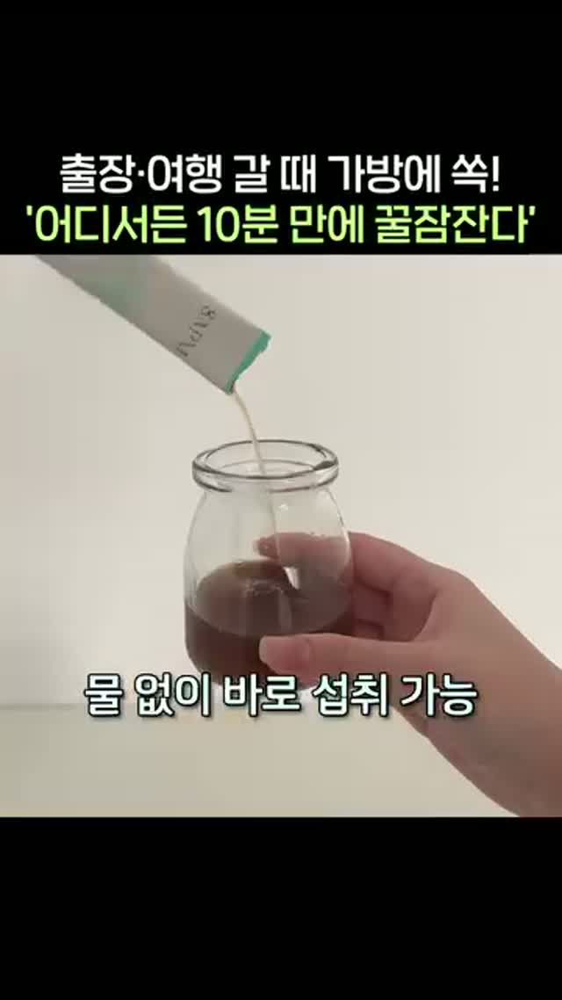
② 바로 시럽 붓기 원본 1.5초 · 설명 위로 붓는 동작을 보여준다.
실제 훅: 시작 순간 인물이 잠깐 보이고, 곧바로 시럽을 병에 붓는 동작이 나온다. 인물 소개나 설명을 끝까지 기다리게 하지 않고 말하는 내용을 바로 움직이는 화면으로 보여준다. 원본에서는 약 1초에 붓기 컷으로 전환해 3초 부근까지 이어진다. 이후 4초 부근 다른 인물 반응 → 5–10초 휴대 경험 설명 → 약 11초부터 안문숙의 포장·사용 이야기. 상단에는 휴대 상황과 수면 소구가 고정되고, 하단은 발언과 현재 동작을 따라간다. 앞 인물의 설명은 붓는 컷 위에서도 이어진다.
확인 방법: 시작 1.5초를 0.1초 간격으로 다시 확인했다. ‘1초대 제형 접사’라는 분류보다 ‘시작 직후 바로 붓는 동작으로 전환’이 핵심이다. 첫 프레임부터 붓는다는 뜻은 아니며, 설명을 마친 뒤 시연하는 구조도 아니다.
반응이 확인된 추가 근거 — 풍자:크림 영상과 실측 화면. 10/27 공유 378·저장 319, 합계 697. 첫 3.5초에 옆 사람의 사용·호평을 먼저 보여주고 피부 광 접사는 약 20초 이후 나온다. 이 광고에서 가져올 것은 ‘먼저 보여주는 사용 반응’이다. 시럽 광고의 빠른 접사와 결합한 아래 김가연 구성은 신규 테스트안이며, 같은 편집의 성과가 이미 검증됐다는 뜻은 아니다.
김가연은 잠깐, 닦는 동작은 바로. 김가연 얼굴을 알아보는 짧은 순간 뒤에 우리가 이미 만든 닦기 광고 컷을 즉시 삽입한다. 인사·소개·설명 대사가 끝나기를 기다리지 않는다. 새 닦기 촬영을 전제로 하지 않으며, 이 조합의 공유·저장 반응은 테스트로 확인한다.
가장 직접적인 선례 — 소유:원본. 소유의 얼굴·피부 이야기 뒤 약 19~21초에 다른 인물의 세럼 도포 컷, 이후 패드·제품 컷을 연결한다. 10/13 기록 공유 330·저장 395, 합계 725. 연예인 장면과 별도 제품 사용 장면을 섞는 방식의 선례다. 이 삽입은 초반 1초가 아니며, 725건은 영상 전체의 반응이므로 삽입 컷만의 효과로 해석하지 않는다.
우리 소스 확인: 로컬 ‘크림 바르고 닦기’ 검토 영상은 13.71초다. 0~4초는 크림이 놓인 상태여서 이 구간 전체를 붙이면 행동이 늦게 나온다. 약 9.5~11.5초의 닦는 동작을 우선 후보로 잡는다. 이 파일은 승인되지 않은 검토본으로 기록돼 있으며, 사용자가 지칭한 실제 집행 최종본과의 일치는 아직 확인하지 못했다. 아래 타이밍은 후보 소스 기준이며 최종본 확인 뒤 확정한다. 생성·재구성된 장면이므로 김가연 본인의 피부 변화나 실제 효과를 입증하는 자료로 해석하지 않는다.
시작~최대 0.8초 / 김가연 얼굴 잠깐: 얼굴을 바로 알아볼 수 있는 짧은 컷만 둔다. 대사 한 문장을 다 듣게 하지 않고 닦는 동작으로 넘긴다. 아래 시간은 편집 초안이며 원본의 전환 시각을 그대로 복제하는 지시가 아니다.
0.8~2.8초 / 기존 광고의 닦기 컷: 우리 광고에서 손이 움직이기 직전부터 닦아내는 순간까지 약 2초를 삽입. 후보 원본 기준 약 9.5~11.5초. 다른 인물의 제품 시연 장면으로 연결한다.
2.8~3.5초 / 동작 마무리: 같은 소스의 이어지는 장면으로 닦기 동작을 끝까지 보여준다. 별도로 재구성된 마지막 분할 비교 화면을 김가연의 전후처럼 붙이지 않는다.
3.5~6초 / 제품과 설명: 제품 컷 또는 확보한 김가연의 실제 제품 설명으로 연결. 관계없는 표정을 닦이는 모습을 보고 놀란 반응으로 설명하지 않는다.
6~8초 / 공통 본편 진입: 사용법·실제 경험으로 넘어간다. 닦기 장면을 길게 다시 반복하지 않는다.
나레이션·자막: 별도 나레이션 초안 ‘바르는 장면 말고, 닦는 순간을 보세요.’를 삽입 구간에 연결하고, 자막은 ‘닦는 순간’처럼 지금 보이는 행동을 짚는다. 김가연에게 하지 않은 말을 붙이거나 ‘김가연의 기미가 닦였다’고 연결하지 않는다. 원본의 무관한 대사·구워진 자막은 편집 전 확인한다.
필요한 소재: 김가연 얼굴 원본, 기존 닦기 광고의 최종본과 자막 없는 소스, 제품 컷. 이 안을 위해 김가연에게 닦기 장면을 새로 요청할 필요는 없다. 현재 확보된 공개 김가연 영상은 구도 참고 자료이며 실제 제품 광고 촬영본과 구분한다.
검증할 것: A는 김가연 얼굴 뒤 설명 컷을 유지하고, B는 같은 시간만큼 기존 닦기 컷으로 교체한다. 같은 첫 얼굴·전체 길이·나레이션·자막·후반 본편·집행 조건으로 비교해 우선 영상 삽입의 차이를 본다. 같은 게시 후 경과 시점에 공유 수·저장 수·합계를 비교한다. 합계만 합치지 않고 공유형인지 저장형인지도 구분한다. 구매·CPA·CTR은 이번 판정 조건으로 사용하지 않는다. 현재 결론은 ‘선례가 있는 테스트 후보’이며 ‘이미 터진 조합’이 아니다.
H0 · 비교 기준 — “김가연이 집에서 쓰는 이것”
대조안 · 반전 없이 인물과 사용을 바로 연결
0–2초 / 동일한 김가연 얼굴:나레이션김가연이 집에서 쓰는 이것. 실제 사용 관계 확인 후 문구 확정.
2–4초 / 관리 부위를 짚음:나레이션평소 관리 방법을 직접 보여줬는데.
4–6초 / 얼굴과 제품이 함께 보이는 컷: 사용 동작을 시작한다.
6–8초 / 동일한 연결 구간: 공통 본편으로 진입.
전체 대사(이어 읽기)
김가연이 집에서 쓰는 이것.평소 관리 방법을 직접 보여줬는데.
역할: 자극을 더하지 않은 기준안이 있어야 반전·유머를 추가한 것이 실제로 나아졌는지 비교할 수 있다.
8초 이후는 같은 본편으로 연결
8–12초: 얼굴 가까이 보여주기·관리 부위 → 12–16초: 제형과 실제 도포 → 16–20초: 본인의 실제 사용 경험 한 문장 → 20–24초: 제품 식별·동일한 구매 안내. 이 길이는 편집 초안이며 확보한 발언 길이에 맞춰 모든 비교안을 함께 조정한다.
촬영은 얼굴·도포를 끊지 않은 원본과 짧은 발언 테이크를 따로 받는다. 상단 고정 문구가 있는 최종 광고는 4:5, 나머지 릴스형은 9:16. 각 안에 필요한 대사·반응·동작을 분리 확보하고, 실제 반응이 자연스러운 테이크를 선택한다.
무엇이 나오면 ‘반응이 터지는 포맷’이라고 판단할까
첫 비교: H0·H1·H2 세 안. 같은 광고 계정·대상·기간·예산·본편·제품 제안으로 비교하고 가능한 경우 무작위 분할한다. 서로 다른 파워페이지의 절대 조회수를 훅 효과로 비교하지 않는다. 이 페이지 추가는 집행 지시나 예산 승인으로 보지 않는다.
핵심 지표: 공유 수·저장 수를 각각 기록하고 합계로 우선 비교한다. 공개되지 않은 숫자는 0으로 채우지 않는다. 좋아요·조회수는 후보 탐색 참고이며 공유·저장을 대신하지 않는다.
비교 조건: 게시 계정·게시일·측정일을 함께 남긴다. 같은 경과 시점의 수치를 우선 비교하고, 계정·게시 기간이 다르면 단순 반응 수의 차이로만 설명한다. 도달 수를 확인하지 못하면 반응률을 만들지 않는다.
판정 규칙: 725건을 고반응의 기준으로 확정하지 않는다. 더 큰 공유·저장 사례를 찾아 초반 컷·장면 연결·나레이션·자막의 공통점을 확인한다. 공유·저장이 미확인인 영상은 구조 참고로만 분류한다. 구매 성과는 확인할 수 없으므로 이번 폼 검증에서 요구하지 않는다.
두 번째 비교: 첫 비교의 기준을 유지한 채 H3·H4·H5를 탐색한다. 별도 동일 조건 재검증 전까지 ‘검증된 흥행 공식’으로 이름 붙이지 않는다.
검증 기록: 기존 게시물 반응 수치는 10/13·10/26 수집본 기준이며 현재 수치가 아니다. 신규 공개 검색에서 동일 메시지의 사용 전례는 찾았지만 김가연 대사 자체의 성과를 입증하는 자료는 찾지 못했다. 7안 모두 제작·집행 전 초안이다.
10/27 추가 검증 · 구매 대신 공유·저장으로 판단
725건보다 큰 반응을 찾고, 실제 폼을 다시 확인했다
소유 725건은 혼합 편집의 선례로 유지하되, 고반응 대표 근거로 삼지 않는다. 기존 56개 계정 자료에 더해 파넬·달바·인사이트·메디큐브 한국·글로벌 공개 목록 60개 타일을 추가 탐색했다. 전체 기간 전수는 아니다. 아래 숫자는 10/27 11:40~11:46 전용 서치폰 화면에서 확인했으며, 좋아요·리포스트와 구분했다. 합계는 행동 건수이며 고유 인원 수가 아니다.
패드는 2026-10-19 게시된 글로벌 브랜드 영상이다. 서로 다른 계정·누적 기간의 절대 반응 비교이며 국내 파워페이지의 성과 배수로 해석하지 않는다.
쿨링 패드 — 첫 화면에서 이미 손이 움직인다
실제 컷: 0~1.5초 패드를 집어 올리는 내용물 접사 → 약 1.5~4초 제품명·패키지 → 4~7초 개봉·내용물·다시 집어 올리기 → 7~10초 손등에 붙이고 누르기 → 10~12초 사용 후 손등 → 제품으로 끝. 전체 약 13.4초.
자막: 첫 화면은 즉시 쿨링에 관한 질문, 다음은 수량·성분, 사용 장면은 민감 피부에 관한 설명, 마무리는 진정·보습이라는 한 줄로 바뀐다. 제품 정보와 현재 보이는 동작을 맞춘다. 음악 표기는 확인했고, 자동 전사의 단일 ‘Bye’는 신뢰할 수 있는 설명 음성으로 채택하지 않았다. 직접 청취한 나레이션 분석으로 보고하지 않는다.
왜 반응했을까 — 가설: 패드가 들리는 움직임·젖은 질감이 첫 화면에 있고, 손등 사용까지 이어져 말로만 설명하는 시간을 줄인다. 수량·사용법 정보는 저장 이유가 될 수 있지만 동기 자체를 측정한 것은 아니다. 김가연에 가져올 것: 얼굴 뒤 우리 닦기 소스를 넣을 때 준비 구간을 빼고 실제 손이 움직이는 순간부터 붙인다. 동작이 끝난 뒤 같은 소스의 마무리도 짧게 남긴다.
이민정 788건의 폼: 몸 관리 이야기를 하면서 빵을 더 찾는 모순으로 시작 → 약 3초 빵 접사 → 4초 제품 → 맛 설명·먹는 반응. 초반 자동 전사는 화면 자막과 대조했으며 원래 대화와 설명이 제품 컷 위에서도 이어진다. 다만 이 숫자로 기존 725건보다 크게 반응한 포맷이라고 결론 내리지 않는다.
김가연 적용: 얼굴 0.8초 → 기존 닦기 동작 2초 → 마무리 0.7초 → 제품·실제 설명. 큰 공유·저장 사례와 각 요소의 선례는 확인했지만, ‘연예인 얼굴 직후 별도 기미 닦기 소스를 삽입한 2차광고’가 크게 반응한 직접 사례는 이번 추가 탐색에서 아직 확보하지 못했다. H6는 이 요소들을 조합한 테스트안으로 유지한다.
10/27 추가 발굴 · 메타 광고 라이브러리 직접 확인
기존 인물 밖에서 찾은 실제 집행 광고
8명 이름으로 검색해 광고 ID 140개를 기록했다. 무관한 광고·단순 이름 언급·동일 소재의 재등록이 포함돼 있어 140편의 적합 사례라는 뜻은 아니다. 아래 뷰티 4편은 원본 영상과 프레임을 확보했다.
김가연과 가까운 추가 사례: 이미숙·오윤아의 실제 사용형 / 한혜진의 별도 해설형 / 채정안의 경험 설명형. 같은 연예인이라도 소재에 따라 본인 발언과 나레이션의 역할이 다르다.
원본 프레임·자동 전사 대조. 첫 1초대 시럽 접사, 약 11초 안문숙 등장. H6 분석 보기
2026-10-27 공개 화면 기준. 시작일과 현재 활성 표시는 연속 집행·광고비·매출을 뜻하지 않는다. 공개 라이브러리에는 ROAS·공유·저장 수치가 없어 이번 신규 소재는 고성과 순위가 아닌 분석 후보로 추가했다. 인물·제품 명칭은 광고 화면/문구 기준이며 검색 결과만 있는 후보의 실제 출연 여부는 확정하지 않는다.
이미숙·오윤아 · ‘떼기 → 만지기 → 체감 설명’으로 제품을 보여준다
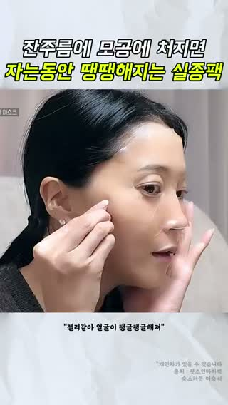
0초 · 손으로 팩을 떼는 동작
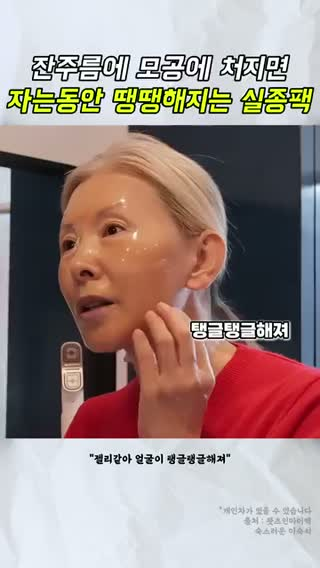
5초 · 볼을 가리키며 체감 설명20초 · 팩 사용과 시간 안내
상단: “잔주름에 모공에 처지면 / 자는동안 땡땡해지는 실종팩”. 중간에는 원본 발언 자막과 볼을 만지는 화면을 배치하고, 뒤에는 사용 시간·제형·가격 대비 만족 발언으로 이어진다.
작동 가설 / 확신도 중간: 첫 화면의 떼는 동작이 제품의 사용 방식을 바로 보여준다. 이어 얼굴을 만지며 설명하므로 시청자가 제품과 체감 이야기를 연결하기 쉽다. 두 사람의 다른 공간·장면을 교대해 한 사람의 긴 설명보다 화면 변화도 생긴다. 실제 시청 유지율·전환 개선은 미확인.
김가연 요청: 바르는 장면과 함께, 사용 부위를 손으로 짚으며 본인이 실제 느낀 점을 설명하는 별도 테이크. 효과를 정해 놓고 말하게 하지 않는다.
한혜진 · 유명인 장면을 짧게 쓰고 일반 사용·제품 장면으로 설명을 확장
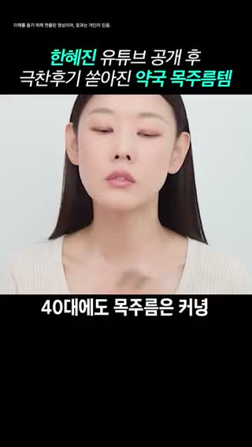
5초 · 유명인 얼굴과 관리 서사
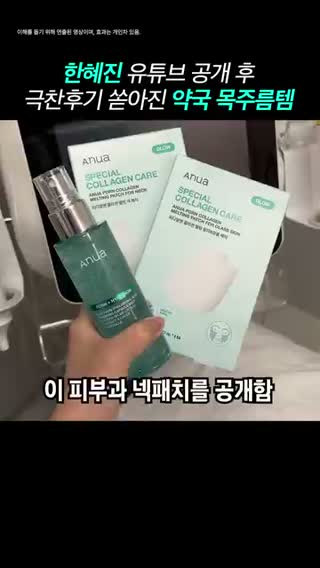
10초 · 제품을 식별할 수 있는 컷20초 · 별도 인물의 사용 장면
상단: “한혜진 유튜브 공개 후 / 극찬후기 쏟아진 약국 목주름템”. 패치 사용 → 한혜진 얼굴 → 제품 → 다른 인물의 패치 시연 → 품절·가격 화면으로 이어진다. 원본 인물과 시연 인물이 같다고 가정하면 안 된다.
작동 가설 / 확신도 중간: 유명인은 관심을 끄는 역할을 맡고, 시연은 제품을 이해시키는 역할을 맡는다. 그래서 연예인이 제품 설명 전부를 말할 필요가 없다. 후기·품절 표현은 광고의 주장으로 관찰했으며 판매 성과로 검증한 것이 아니다.
김가연 적용: 김가연 얼굴·짧은 육성·사용 컷을 먼저 확보하고, 제형·제품·사용법은 별도 촬영으로 보충한다. 핵심 촬영에서 긴 판매 대본을 모두 읽게 할 필요가 없다.
채정안 선크림 · 본인 토크에 다른 사용 장면과 해설을 끼워 넣는다
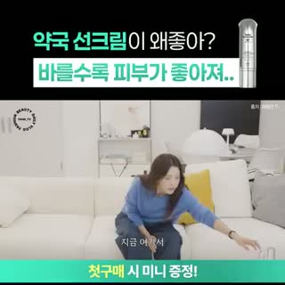
0초 · 집에서 시작하는 원본 토크
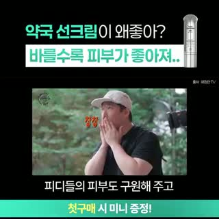
10초 · 제작진 사용 장면25초 · 제품을 들고 이름을 연결
상단: “약국 선크림이 왜좋아? / 바를수록 피부가 좋아져..”. 하단에는 첫 구매 증정 문구가 유지된다. 본인 토크 사이에 제작진·야외 사용 장면을 넣고, 제품명을 크게 보여주는 구간을 둔다.
작동 가설 / 확신도 중간: ‘왜 좋은가’라는 질문에 본인 말만 반복하지 않고 다른 사람의 사용 장면도 보여준다. 관심을 끄는 질문, 사용 이야기, 제품 식별, 구매 혜택이 각기 다른 화면 영역에서 역할을 나눠 가진다.
김가연 적용: 고정 문구를 김가연의 경험 질문으로 두고, 하단 자막은 그때 보이는 동작과 실제 발언에 맞춘다. 제품명·구매 행동은 별도 구간에서 읽히게 한다.
채정안 POLA · ‘20대부터 시작한 관리’ 경험 → 실제 도포로 연결
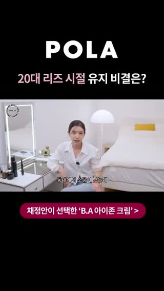
0초 · 경험 이야기로 시작
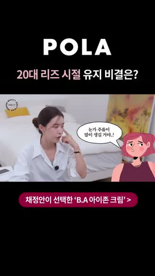
5초 · 고민 부위를 짚음15초 · 실제 사용법
상단: “20대 리즈 시절 유지 비결은?”. 하단에는 B.A 아이존 크림 선택 문구가 고정된다. 약 20초 안에 경험 설명·눈가를 짚는 동작·거울 앞 도포가 이어진다.
작동 가설 / 확신도 중간: 추상적인 ‘동안’ 이야기를 눈가라는 특정 부위와 실제 동작으로 좁혀 보여준다. 김가연이 필요한 부위를 직접 짚고 사용하는 컷을 요청해야 하는 이유와 가장 가깝다. 장기 관리 경험을 단일 제품 효과로 단정하지 않는다.
음성도 같은 방식으로 편집된 게 아니다
이미숙·오윤아: 0–9초 체감 반응, 이후 제품 대화와 사용 이야기, 33–37초 가격 대비 만족 발언. 본인 반응·대화를 짧게 연결하는 구성이다.
한혜진: 0–10초 인물·관리 이야기, 10–24초 제품 설명, 24–30초 구매 링크 안내. 제3자 해설 문장이 대부분을 차지하고 중간에 짧은 반응이 삽입된다. 화면에 나온 모든 사용자를 한혜진으로 보면 안 된다.
채정안 선크림: 0–8초 사용해 봤는지 묻고 답하는 대화, 9–19초 다른 사용 장면, 20–33초 제품 설명. 추가 해설 자막이 있어도 음성 전체가 별도 나레이션인 것은 아니다.
채정안 POLA: 0–6초 친구에게 들은 눈가 관리 이야기, 6–12초 아이크림을 바르기 시작한 경험, 13–20초 본인의 관리 생각. 화면은 토크에서 도포로 바뀌어도 경험 이야기는 이어진다.
김가연 촬영 요청은 ① 본인 경험을 말하는 짧은 문장 ② 고민 부위를 짚는 얼굴 ③ 제형과 도포 ④ 도포 뒤 얼굴을 보여주는 정지 구간으로 나눈다. 원본 대화를 살리는 버전과 별도 나레이션 버전을 같은 촬영분으로 만들 수 있게 받는다.
프레임은 약 5초 간격으로 확인했다. 신규 4편의 음성은 자동 전사와 화면 문맥을 대조했으며 직접 청취·화자 식별 완료를 뜻하지 않는다. 전사 오류가 있어 인용 자막의 최종 확정에는 원음 대조가 필요하다. 공개 집행 기록만으로 ‘왜 잘 팔렸는지’를 확정하지 않는다.
10/27 보강 · 장면 + 발언 + 나레이션 + 자막
잘 찍힌 컷보다 먼저 볼 것: 그 컷에 어떤 이야기를 붙였나
상단 문구는 궁금증을 만들고, 별도 나레이션은 서로 다른 장면을 연결한다. 본인 발언·사용 장면은 그 설명을 받쳐준다. 김가연의 밀착 사용 컷은 이 흐름 안에서 쓸 핵심 촬영 재료다.
기존 이경실·이혜정·박원숙·조혜련 외에 강소라·카디비·나솔 영수의 편집 구조를 비교했다. 강소라는 새 수집본, 나머지 두 편은 기존 확보본을 다시 대조했다. 시술 사례는 편집 방식의 참고이며 화장품 효과의 근거로 사용하지 않는다.
편집이 설득력 있는 이유 — 가설 / 확신도 중간: 평범한 PC방 컷을 ‘대학생 같다’는 해설이 외모를 관찰하는 화면으로 바꾼다. 이어 본인 발언이 등장해 해설만 계속되는 구성을 끊는다. 끝은 제품 설명 대신 예능 반응으로 돌아간다. 단, 끝의 외모 일화가 실제 시술 효과를 증명하는 것은 아니다.
성과 판정: 이 영상 자체는 승자로 판정하지 않는다. 같은 수집본에서 동일 계정의 조회 확인 영상 11건 중 8위이고 중앙값 60,348보다 낮다. 음악·영화 등 다른 주제가 섞인 불완전 표본이므로 계정 평균 성과로 일반화하지 않는다. 별도 강소라 광고 @luna.player는 10/21 공유 407·저장 369가 확인됐지만, 그 776건을 이 편집본의 성과로 옮겨 쓰지 않는다.
음성은 로컬 자동 전사와 1초 프레임의 입모양·원본 자막·별도 자막을 대조한 분류다. 음색을 직접 청취해 성우/TTS를 확정한 분석은 아니다. 전사 ‘쿨파워’는 화면에 ‘풀파워’로 보이므로 원문 인용에서 제외했다. 과거·현재 사진의 촬영 조건은 검증되지 않았다.
반응을 설명하는 가설 / 확신도 중간: 유명인 이름만 붙이는 데서 끝나지 않고 ‘한국 제품을 즐겨 쓰는 사람’이라는 연결 이유를 먼저 만든다. 실제 시술 화면은 연결의 시각적 근거가 되고, 통증·일상 복귀 설명은 관심 이후의 망설임을 다룬다. 저장 188은 정보 보관에 맞는 구조와 부합하지만 저장 이유가 확인된 것은 아니다.
음성 전사·1초 프레임 대조 기준. 나레이션 중심이며 카디비의 직접 한국어 추천 멘트가 아니다. 영상 내 기능 주장은 광고에서 관찰한 내용이며 본 분석이 효과를 검증한 것은 아니다. 구매 성과·집행비는 미확인.
③ 나솔 영수 · 여러 유명인의 공통점 질문 → 실제 받은 장면
@hana.humor 원문 ↗ · 24초 · 10/13 기록: 좋아요 376 · 저장 172 · 공유 첫 자리 판독 불가
상단 고정: “나는솔로 29기 영수도 / 받았다는 ‘K-리프팅’”
0초 · 얼굴 콜라주와 공통점 질문
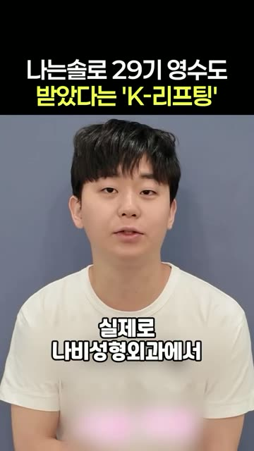
10초 · 실제 경험의 원본 장면18초 · 방송 장면에 변화 해설
구간
장면
별도 나레이션·하단 자막 역할
0–5초
유명인 콜라주·방송 클립
이름을 나열하고 ‘이들의 공통점은?’ 질문
5–13초
영수 얼굴·시술 관련 원본
시술명을 공개하고 실제 받은 모습이라는 설명
13–24초
일상·방송 출연
외모 관리 이야기 → 달라진 인상 → 나도 받고 싶다는 화자 반응
반응을 설명하는 가설 / 확신도 중간: 시청자가 아는 얼굴을 여러 개 제시한 뒤 공통점 질문으로 다음 장면을 보게 만든다. 원본 인터뷰를 길게 설명하게 하지 않고, 별도 해설이 방송·일상·시술 화면을 하나의 변화 이야기로 엮는다. 방송 얼굴은 비교 조건이 통제된 결과 사진이 아니다.
저장 172는 확인됐지만 공유 합산 순위는 산출하지 않는다. 시술 관련 원본의 존재와 별개로, 영상에서 주장하는 모든 유명인의 이용 사실을 별도 검증한 것은 아니다.
무엇 때문에 잘됐는지, 어디까지 말할 수 있나
실제 비교
관찰
해석
같은 소유 편집본
luna.player 공유+저장 725 / comedy.1989__ 373 (10/13)
같은 영상도 약 1.94배 차이. 컷만으로 성과를 설명할 수 없고 계정·노출 차이를 함께 봐야 한다.
이경실과 조혜련
이경실 malangping_zzal 저장 3 / 조혜련 tree.humor 저장 141 (10/13)
말로 효능을 설명하는 구조와 직접 보여주는 구조의 차이는 후속 테스트 가설. 계정·상품·노출이 달라 47배를 컷 효과로 해석하지 않는다.
강소라 신규 편집본
조회 57,737·좋아요 236, 공유·저장 미확인
편집 참고 사례. 조회가 있다는 이유만으로 고성과 사례로 선정하지 않는다.
‘잘 나온 이유’는 ① 무엇이 보였는지 ② 어떤 반응이 기록됐는지 ③ 그 둘을 연결하는 가설 순서로 판단한다. 공유·저장은 영상 전체의 반응이다. 계정·게시 기간·인물을 통제한 비교가 아니므로 특정 컷만의 원인을 확정할 수는 없다.
김가연에게 적용하면
베스트컷 선정은 유지하되, 8초 사용 장면만으로 오프닝을 확정하지 않는다. 관심 문구 → 실제 발언 → 밀착 사용 컷으로 연결하는 편집안을 우선 만든다.
역할
필요한 화면·음성
편집용 문구 초안
0–3초 관심
얼굴이 식별되는 일상 또는 정면 컷
상단 고정: “나도 기미 있어요” 고백했던 / 김가연 요즘 바르는 것
3–5초 본인 발언
10/9 원본 18:53 부근의 기미 언급. 앞뒤 문맥을 유지해 사용
실제 육성 “나도 기미가 있어요”. 해당 발언을 제품 효과 증언으로 바꾸지 않는다.
5–10초 사용법 연결
추가 요청한 얼굴 밀착·볼 도포 컷 중 동작이 읽히는 구간
별도 나레이션 초안: “김가연이 직접 보여준 사용법, 가까이 보면 이렇습니다.” / 하단: 바르는 부위·방법에 맞춰 표기
후속 구간
제품 식별·실제 사용 설명·마무리 얼굴
원본을 확보한 뒤 실제 발언과 제품 정보로 작성. 빈 구간을 임의의 체험담으로 채우지 않는다.
촬영 요청 보완: 밀착 사용 컷은 설명 없이 손동작이 잘 보이는 테이크를 먼저 확보한다. 별도로 “어느 부위에, 어떻게 바르시는지” 자연스럽게 설명하는 테이크를 받아, 육성을 살리는 버전과 별도 해설 버전을 모두 편집할 수 있게 한다.
검증 설계: 같은 얼굴·사용 컷, 길이, CTA를 두고 첫 문구만 비교한 뒤, 선택한 문구를 유지한 채 육성 중심과 별도 해설 중심을 비교한다. 가능하면 같은 광고 계정·대상·예산·기간으로 노출하고 같은 게시 후 경과 시점의 공유 수·저장 수·합계를 확인한다. 서로 다른 파워페이지에 한 편씩 올린 결과만으로 오프닝 승자를 정하지 않는다.
범위: 기존 분석·10/26 수집 117건 중 적합 후보와 확보 원본을 사용했다. 56개 계정 전수 검증이 아니다. 추가 수집은 Apify 월 사용 한도 초과로 중단됐다. 유료 집행 여부가 확정되지 않은 상업성 재편집물도 포함하며, 인스타 2차광고 전체의 최고성과 목록으로 표시하지 않는다.
이전 컷 구성 초안 4안 · 문구와 순서 변주 원테이크판으로 대체됨
원테이크판으로 대체됨: 아래 6~7컷 구성은 컷 사이 무발화 구간이 있어 나레이션 없음 요건에 맞지 않는다. 현재안은 【나레이션 없음 · 30초 원테이크】. 관리 고백 = 나도 관리 엄청 해(같은 안).
김가연의 광고를 어떤 장면과 순서로 구성할지 보여주는 예시입니다. 이미지를 옆으로 넘기면 영상의 흐름을 볼 수 있습니다. 공개 영상으로 만든 합성 예시입니다.
성과 판단 · 10/27 기준
이번 광고 폼 검증은 공유 수·저장 수와 합계로 판단한다. 조회수·좋아요는 후보 탐색 참고다. 구매 성과는 확인할 수 없으므로 판정 조건에 넣지 않는다. 게시 계정·게시일·측정일을 함께 기록한다. 게시비가 확인된 경우 공유·저장 1건당 비용도 병기한다.
광고별 장면 흐름 비교 · 실제 컷으로 보기
레퍼런스 4편과 김가연 제작 초안 4안을 같은 콘티 형식으로 나란히 읽는다. 각 행을 옆으로 넘기면 시작부터 마지막 컷까지 볼 수 있다.
이경실 · 실제 광고 6컷
원본 화면의 상단·하단 문구를 자르거나 덧씌우지 않았다. 아래 글은 기존 원본 대사·자막 기록이며, 마지막 패널은 실제 끝 0.4초 전 프레임이다. 원본 광고 ↗
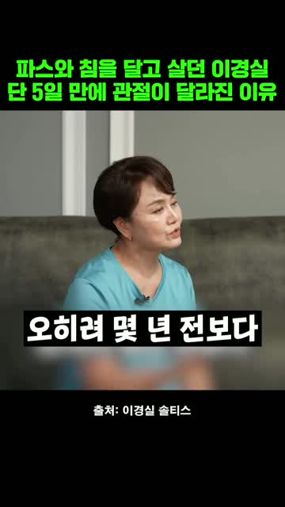
컷 1 · 0–2초 구간결과·비포애프터 원본 대사·자막 기록 오히려 몇 년 전보다 관절이 더 좋아진 것 같아요. 원본 ↗
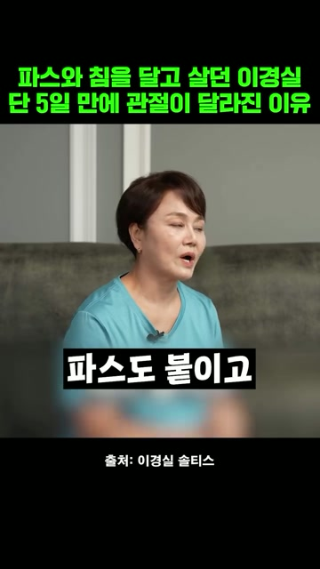
컷 2 · 2–7초 구간문제제기 원본 대사·자막 기록 파스도 붙이고 침 맞으러 다니고 관절 때문에 제가 고생을 많이 했는데 이거 진짜 관절이 잘 들어요. 원본 ↗
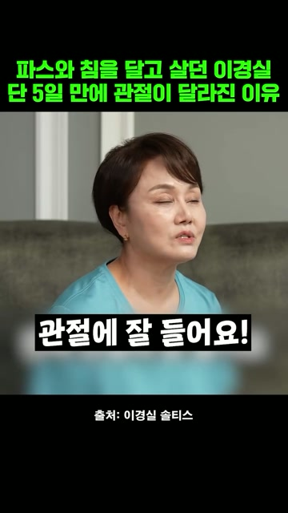
컷 3 · 7–14초 구간제품 노출 원본 대사·자막 기록 이거 진짜 관절이 잘 들어요. 최단기간에 관절이 좋아진다고 소문이 난 성분인데 5일 만에 개선됐다는 거예요. 임상실험 결과 테마플릭스라고 제가 솔직히 어디 좋다고 해서 원본 ↗
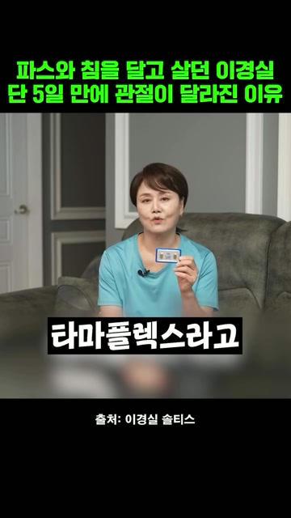
컷 4 · 14–19초 구간연예인 사용·언급 원본 대사·자막 기록 테마플릭스라고 제가 솔직히 어디 좋다고 해서 흘렁흘렁 넘어가서 아무거나 먹고 그런 성격은 아니에요. 원본 ↗
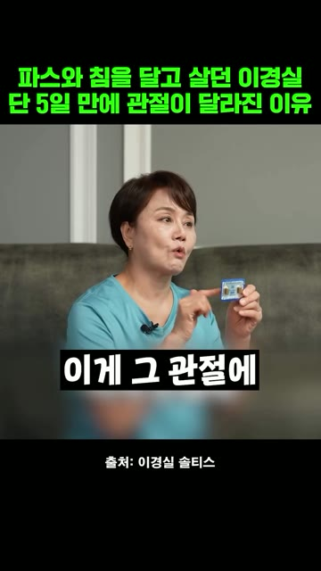
컷 5 · 19–23.4초 구간결과·비포애프터 원본 대사·자막 기록 이게 관절에 기름칠을 한 것 같다고 해야 되나? 이게 좀 효과가 좋아요. 제가 볼 때는 원본 ↗
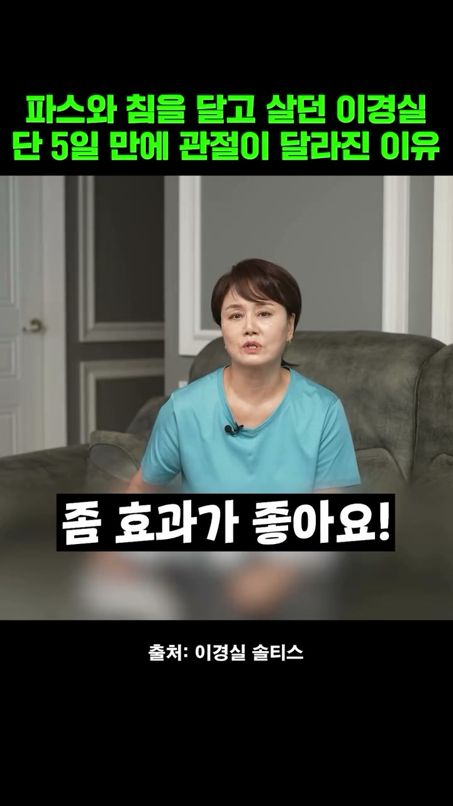
컷 6 · 실제 끝 컷 · 원본 23.0초실제 엔딩 마지막 음성 · AI 전사 좀 효과가 좋아요! 원본 ↗
이혜정 · 실제 광고 7컷
원본 화면의 상단·하단 문구를 자르거나 덧씌우지 않았다. 아래 글은 기존 원본 대사·자막 기록이며, 마지막 패널은 실제 끝 0.4초 전 프레임이다. 원본 광고 ↗
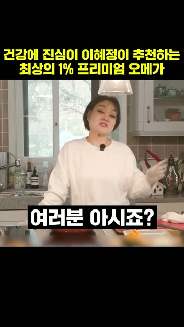
컷 1 · 0–3.77초 구간훅 원본 대사·자막 기록 여러분 아시죠? 제가 협찬 잘 안 하는 거 원본 ↗
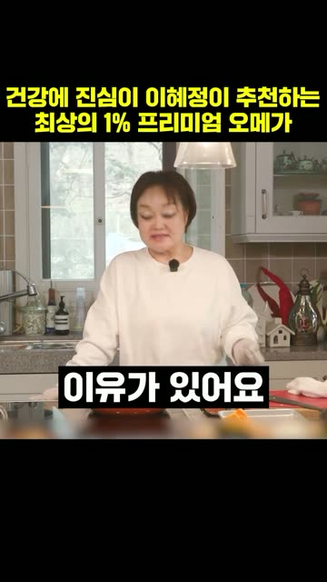
컷 2 · 3.77–6.03초 구간제품 노출 원본 대사·자막 기록 진액 최상위 1%래요 원본 ↗
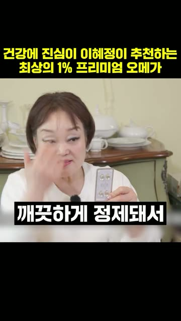
컷 3 · 6.03–10.1초 구간 원본 대사·자막 기록 깨끗하게 정제돼서 들어간다는 게 좋은 거잖아요 원본 ↗
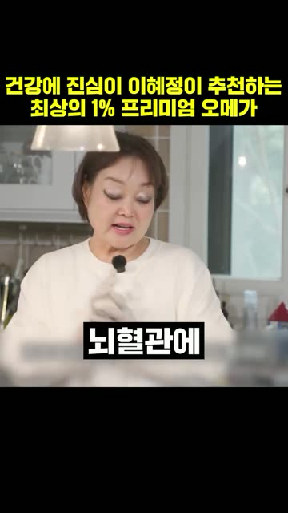
컷 4 · 10.1–13.07초 구간 원본 대사·자막 기록 뇌혈관에 굉장히 좋대요 원본 ↗
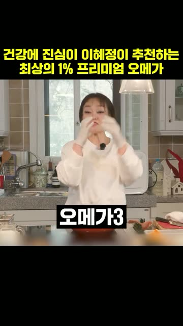
컷 5 · 13.07–16.87초 구간 원본 대사·자막 기록 오메가3 가져가면 혈관 청소하는 데 원본 ↗
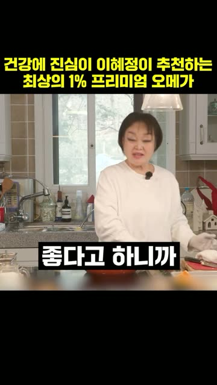
컷 6 · 16.87–20.37초 구간 원본 대사·자막 기록 하루에 딱 한 번 먹으면 되니까 원본 ↗
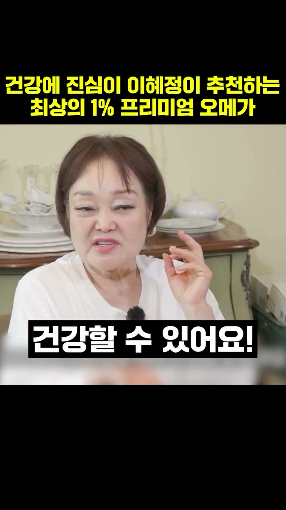
컷 7 · 실제 끝 컷 · 원본 23.3초실제 엔딩 마지막 음성 · AI 전사 이렇게 드시면 정말 우리 건강할 수 있어요! 원본 ↗
박원숙 · 실제 광고 7컷
원본 화면의 상단·하단 문구를 자르거나 덧씌우지 않았다. 아래 글은 기존 원본 대사·자막 기록이며, 마지막 패널은 실제 끝 0.4초 전 프레임이다. 원본 광고 ↗
컷 1 · 0–1.9초 구간훅 원본 대사·자막 기록 경수리가 이거를 소개를 해줬어 원본 ↗컷 2 · 1.9–5.3초 구간 원본 대사·자막 기록 이 혈관은 아주 나빠지기 전에 관리를 잘 해야 되는데 원본 ↗컷 3 · 5.3–7.7초 구간제품 노출 원본 대사·자막 기록 요거는 귀리 식이섬유가 들어있고 원본 ↗컷 4 · 7.7–11.6초 구간 원본 대사·자막 기록 요거는 콜레스테롤 그 성분을 꽉 잡아주는 성분이 있대 원본 ↗컷 5 · 11.6–19.6초 구간 원본 대사·자막 기록 아침에 밥 먹고 한 번 또 저녁에 밥 먹고 한 번 원본 ↗컷 6 · 19.6–23.6초 구간효과 주장 원본 대사·자막 기록 같이 있었던 애들 중에 내가 제일 젊어 원본 ↗컷 7 · 실제 끝 컷 · 원본 25.2초실제 엔딩 마지막 음성 · AI 전사 아 너무 기분 좋았어 원본 ↗
조혜련 · 실제 광고 6컷
원본 화면의 상단·하단 문구를 자르거나 덧씌우지 않았다. 아래 글은 기존 원본 대사·자막 기록이며, 마지막 패널은 실제 끝 0.4초 전 프레임이다. 원본 광고 ↗
컷 1 · 0–2초 구간결과·비포애프터 원본 대사·자막 기록 똥배는 요게 답이에요. 동생 안 빠지던 그 아랫배 있죠? 요 아랫배. 원본 ↗컷 2 · 2–8초 구간문제제기→결과 원본 대사·자막 기록 동생 안 빠지던 그 아랫배 있죠? 요 아랫배. 요 아랫배가 쏙 들어갔잖아. 보여? 아랫배. 원본 ↗컷 3 · 8–15초 구간연예인 사용·언급 원본 대사·자막 기록 요 아랫배가 쏙 들어갔잖아. 보여? 아랫배. 먹고 제가 사실은 하루에 꼭 한 번씩 화장실을 가요. 가면은 꼬아리를 틀어요. 원본 ↗컷 4 · 15–23초 구간권위·사회적증거 원본 대사·자막 기록 정선이도 봉선이한테 추천을 받아서 이거 먹더라고요. 자기 유튜브에서도 얘기하고 하는데 연예인들 웬만한 연예인들 다 먹으니까 원본 ↗컷 5 · 23–28.1초 구간결과·비포애프터 원본 대사·자막 기록 연예인들 웬만한 연예인들 다 먹으니까 똥배 없잖아. 똥배 없고 배만 있잖아. 원본 ↗컷 6 · 실제 끝 컷 · 원본 27.7초실제 엔딩 마지막 음성 · AI 전사 똥배 없고 배만 있자나 원본 ↗
동안 모녀 · 김가연 제작 초안 6컷
상단 고정 문구·가운데 장면·하단 대사·배치 순서를 보여주는 제작 초안이다. 아래 실제 광고의 확정 발언·완성본과 구분하며, 마지막 컷도 제안된 엔딩이다. 딸 출연 시 · 약 28초 · 기존 장면 참고 원본 ↗
읽는 대본 · 김가연 발화형 이 4안에는 별도 나레이션을 추가하지 않는다. ‘기존 요청’은 10/12 설계·10/26 촬영편집 문서에 적힌 요청 문장으로, 해당 녹음 테이크 확보는 미확인이다. ‘9/21 미팅 발언 · 광고 음성 사용 불가’는 비공개 미팅 녹음에서 나온 본인 기미 경험 문장이라 그 음성을 광고에 쓰지 않고, 촬영 때 같은 말을 다시 요청한다. ‘추가 촬영 제안’은 새로 받을 대사이며 실제 발언으로 인용하지 않는다. 컷 시간은 편집 목표이고, 발화가 끝난 뒤 남는 시간은 손동작·표정으로 채운다.
기존 요청 문구와 이번 대본 변경 기록
기존 요청서에는 “기미는 레이저로 하는 거 아니야. 오히려 번져”, “트라넥삼산이라는 건데, 부작용이 없대~”가 있었다. 이 문구는 요청 기록으로 보관하고, 이번 읽기 대본·화면 자막은 9/21 미팅 발언 “저도 기미에 관련해서 받아본 적이 한 번도 없어요”와 성분명 부분 “트라넥삼산이라는 건데”로 맞췄다. “이거 봐 봐, 기미가 지워지잖아”는 기존 요청 멘트이며 실제 확보 발언으로 표시하지 않는다. 이미지의 공개 장면 출처는 음성 확보의 증거가 아니다.
근거: 10/12 광고설계 §3·§4 및 9/21 발언 대조 기록 / 10/26 촬영·편집 구성안. 같은 말을 촬영 때 다시 받아 실제 발화 길이를 확인하는 일이 남아 있다.
상단 고정 문구·가운데 장면·하단 대사·배치 순서를 보여주는 제작 초안이다. 아래 실제 광고의 확정 발언·완성본과 구분하며, 마지막 컷도 제안된 엔딩이다. 모녀 촬영분에 할머니·김가연·큰딸의 기존 영상을 더한 구성 · 약 28초 · 기존 장면 참고 원본 ↗
읽는 대본 · 김가연 발화형 이 4안에는 별도 나레이션을 추가하지 않는다. ‘기존 요청’은 10/12 설계·10/26 촬영편집 문서에 적힌 요청 문장으로, 해당 녹음 테이크 확보는 미확인이다. ‘9/21 미팅 발언 · 광고 음성 사용 불가’는 비공개 미팅 녹음에서 나온 본인 기미 경험 문장이라 그 음성을 광고에 쓰지 않고, 촬영 때 같은 말을 다시 요청한다. ‘추가 촬영 제안’은 새로 받을 대사이며 실제 발언으로 인용하지 않는다. 컷 시간은 편집 목표이고, 발화가 끝난 뒤 남는 시간은 손동작·표정으로 채운다.
기존 요청 문구와 이번 대본 변경 기록
기존 요청서에는 “기미는 레이저로 하는 거 아니야. 오히려 번져”, “트라넥삼산이라는 건데, 부작용이 없대~”가 있었다. 이 문구는 요청 기록으로 보관하고, 이번 읽기 대본·화면 자막은 9/21 미팅 발언 “저도 기미에 관련해서 받아본 적이 한 번도 없어요”와 성분명 부분 “트라넥삼산이라는 건데”로 맞췄다. “이거 봐 봐, 기미가 지워지잖아”는 기존 요청 멘트이며 실제 확보 발언으로 표시하지 않는다. 이미지의 공개 장면 출처는 음성 확보의 증거가 아니다.
근거: 10/12 광고설계 §3·§4 및 9/21 발언 대조 기록 / 10/26 촬영·편집 구성안. 같은 말을 촬영 때 다시 받아 실제 발화 길이를 확인하는 일이 남아 있다.
상단 고정 문구·가운데 장면·하단 대사·배치 순서를 보여주는 제작 초안이다. 아래 실제 광고의 확정 발언·완성본과 구분하며, 마지막 컷도 제안된 엔딩이다. 딸 불참 시 · 약 26초 · 기존 장면 참고 원본 ↗
읽는 대본 · 김가연 발화형 이 4안에는 별도 나레이션을 추가하지 않는다. ‘기존 요청’은 10/12 설계·10/26 촬영편집 문서에 적힌 요청 문장으로, 해당 녹음 테이크 확보는 미확인이다. ‘9/21 미팅 발언 · 광고 음성 사용 불가’는 비공개 미팅 녹음에서 나온 본인 기미 경험 문장이라 그 음성을 광고에 쓰지 않고, 촬영 때 같은 말을 다시 요청한다. ‘추가 촬영 제안’은 새로 받을 대사이며 실제 발언으로 인용하지 않는다. 컷 시간은 편집 목표이고, 발화가 끝난 뒤 남는 시간은 손동작·표정으로 채운다.
기존 요청 문구와 이번 대본 변경 기록
기존 요청서에는 “기미는 레이저로 하는 거 아니야. 오히려 번져”, “트라넥삼산이라는 건데, 부작용이 없대~”가 있었다. 이 문구는 요청 기록으로 보관하고, 이번 읽기 대본·화면 자막은 9/21 미팅 발언 “저도 기미에 관련해서 받아본 적이 한 번도 없어요”와 성분명 부분 “트라넥삼산이라는 건데”로 맞췄다. “이거 봐 봐, 기미가 지워지잖아”는 기존 요청 멘트이며 실제 확보 발언으로 표시하지 않는다. 이미지의 공개 장면 출처는 음성 확보의 증거가 아니다.
근거: 10/12 광고설계 §3·§4 및 9/21 발언 대조 기록 / 10/26 촬영·편집 구성안. 같은 말을 촬영 때 다시 받아 실제 발화 길이를 확인하는 일이 남아 있다.
"나도 기미 있어요" 고백했던김가연 요즘 바르는 것
0–2초
이거 봐 봐,
참고 이미지 · 면봉 도포 구도기존 요청
컷 1 · 0–2초김가연“이거 봐 봐,”0–1초 발화 / 1–2초 손동작
화면: 면봉 클로즈업
"나도 기미 있어요" 고백했던김가연 요즘 바르는 것
2–6초
기미가 지워지잖아
출처: 김가연 임요환의 게임부부기존 요청
컷 2 · 2–6초김가연“기미가 지워지잖아”2–4초 발화 / 4–6초 도포
화면: 액션캠 정면
"나도 기미 있어요" 고백했던김가연 요즘 바르는 것
6–11초
저도 기미에 관련해서 받아본 적이 한 번도 없어요
출처: 김가연 임요환의 게임부부9/21 미팅 발언 · 음성 사용 불가
컷 3 · 6–11초김가연“저도 기미에 관련해서 받아본 적이 한 번도 없어요”6–11초 발화 목표
상단 고정 문구·가운데 장면·하단 대사·배치 순서를 보여주는 제작 초안이다. 아래 실제 광고의 확정 발언·완성본과 구분하며, 마지막 컷도 제안된 엔딩이다. 깨끗한 얼굴을 먼저 보여주고 관리 이야기로 시작 · 약 29초 · 대사는 제안 예시 · 기존 장면 참고 원본 ↗
읽는 대본 · 김가연 발화형 이 4안에는 별도 나레이션을 추가하지 않는다. ‘기존 요청’은 10/12 설계·10/26 촬영편집 문서에 적힌 요청 문장으로, 해당 녹음 테이크 확보는 미확인이다. ‘9/21 미팅 발언 · 광고 음성 사용 불가’는 비공개 미팅 녹음에서 나온 본인 기미 경험 문장이라 그 음성을 광고에 쓰지 않고, 촬영 때 같은 말을 다시 요청한다. ‘추가 촬영 제안’은 새로 받을 대사이며 실제 발언으로 인용하지 않는다. 컷 시간은 편집 목표이고, 발화가 끝난 뒤 남는 시간은 손동작·표정으로 채운다.
기존 요청 문구와 이번 대본 변경 기록
기존 요청서에는 “기미는 레이저로 하는 거 아니야. 오히려 번져”, “트라넥삼산이라는 건데, 부작용이 없대~”가 있었다. 이 문구는 요청 기록으로 보관하고, 이번 읽기 대본·화면 자막은 9/21 미팅 발언 “저도 기미에 관련해서 받아본 적이 한 번도 없어요”와 성분명 부분 “트라넥삼산이라는 건데”로 맞췄다. “이거 봐 봐, 기미가 지워지잖아”는 기존 요청 멘트이며 실제 확보 발언으로 표시하지 않는다. 이미지의 공개 장면 출처는 음성 확보의 증거가 아니다.
근거: 10/12 광고설계 §3·§4 및 9/21 발언 대조 기록 / 10/26 촬영·편집 구성안. 같은 말을 촬영 때 다시 받아 실제 발화 길이를 확인하는 일이 남아 있다.
타고난 피부인 줄 알았죠?김가연의 관리 비결
0–3초
사람들은 피부 타고났다고 하는데,
출처: 김가연 임요환의 게임부부촬영 제안
컷 1 · 0–3초김가연“사람들은 피부 타고났다고 하는데,”0–3초 발화 목표
화면: 깨끗한 얼굴 클로즈업 · 피부를 충분히 보여주기
타고난 피부인 줄 알았죠?김가연의 관리 비결
3–6초
나도 관리 엄청 해~
출처: 김가연 임요환의 게임부부촬영 제안
컷 2 · 3–6초김가연“나도 관리 엄청 해~”3–5초 발화 / 5–6초 표정
화면: 정면을 보며 편하게 이야기
타고난 피부인 줄 알았죠?김가연의 관리 비결
6–9초
요즘 내가 바르는 게 이거야
출처: 김가연 임요환의 게임부부촬영 제안
컷 3 · 6–9초김가연“요즘 내가 바르는 게 이거야”6–8.5초 발화 / 8.5–9초 손
0–2초 구간결과·비포애프터 원본 대사·자막 기록 오히려 몇 년 전보다 관절이 더 좋아진 것 같아요. 원본 ↗2–7초 구간문제제기 원본 대사·자막 기록 파스도 붙이고 침 맞으러 다니고 관절 때문에 제가 고생을 많이 했는데 이거 진짜 관절이 잘 들어요. 원본 ↗7–14초 구간제품 노출 원본 대사·자막 기록 이거 진짜 관절이 잘 들어요. 최단기간에 관절이 좋아진다고 소문이 난 성분인데 5일 만에 개선됐다는 거예요. 임상실험 결과 테마플릭스라고 제가 솔직히 어디 좋다고 해서 원본 ↗14–19초 구간연예인 사용·언급 원본 대사·자막 기록 테마플릭스라고 제가 솔직히 어디 좋다고 해서 흘렁흘렁 넘어가서 아무거나 먹고 그런 성격은 아니에요. 원본 ↗19–23.4초 구간결과·비포애프터 원본 대사·자막 기록 이게 관절에 기름칠을 한 것 같다고 해야 되나? 이게 좀 효과가 좋아요. 제가 볼 때는 원본 ↗
이혜정
"협찬 잘 안 하는 거 아시죠" 신뢰 훅 · 23.7초
0–3.77초 구간훅 원본 대사·자막 기록 여러분 아시죠? 제가 협찬 잘 안 하는 거 원본 ↗3.77–6.03초 구간제품 노출 원본 대사·자막 기록 진액 최상위 1%래요 원본 ↗6.03–10.1초 구간 원본 대사·자막 기록 깨끗하게 정제돼서 들어간다는 게 좋은 거잖아요 원본 ↗10.1–13.07초 구간 원본 대사·자막 기록 뇌혈관에 굉장히 좋대요 원본 ↗13.07–16.87초 구간 원본 대사·자막 기록 오메가3 가져가면 혈관 청소하는 데 원본 ↗16.87–20.37초 구간 원본 대사·자막 기록 하루에 딱 한 번 먹으면 되니까 원본 ↗20.37–23.7초 구간엔딩 원본 대사·자막 기록 이렇게 드시면 정말 건강할 수 있어요! 원본 ↗
박원숙
본인 증언 + 지인 추천 · 25.6초
0–1.9초 구간훅 원본 대사·자막 기록 경수리가 이거를 소개를 해줬어 원본 ↗1.9–5.3초 구간 원본 대사·자막 기록 이 혈관은 아주 나빠지기 전에 관리를 잘 해야 되는데 원본 ↗5.3–7.7초 구간제품 노출 원본 대사·자막 기록 요거는 귀리 식이섬유가 들어있고 원본 ↗7.7–11.6초 구간 원본 대사·자막 기록 요거는 콜레스테롤 그 성분을 꽉 잡아주는 성분이 있대 원본 ↗11.6–19.6초 구간 원본 대사·자막 기록 아침에 밥 먹고 한 번 또 저녁에 밥 먹고 한 번 원본 ↗19.6–23.6초 구간효과 주장 원본 대사·자막 기록 같이 있었던 애들 중에 내가 제일 젊어 원본 ↗23.6–25.6초 구간엔딩 원본 대사·자막 기록 아 너무 기분 좋았어 원본 ↗
조혜련
본인 증언 + 지인 추천 · 28.1초
0–2초 구간결과·비포애프터 원본 대사·자막 기록 똥배는 요게 답이에요. 동생 안 빠지던 그 아랫배 있죠? 요 아랫배. 원본 ↗2–8초 구간문제제기→결과 원본 대사·자막 기록 동생 안 빠지던 그 아랫배 있죠? 요 아랫배. 요 아랫배가 쏙 들어갔잖아. 보여? 아랫배. 원본 ↗8–15초 구간연예인 사용·언급 원본 대사·자막 기록 요 아랫배가 쏙 들어갔잖아. 보여? 아랫배. 먹고 제가 사실은 하루에 꼭 한 번씩 화장실을 가요. 가면은 꼬아리를 틀어요. 원본 ↗15–23초 구간권위·사회적증거 원본 대사·자막 기록 정선이도 봉선이한테 추천을 받아서 이거 먹더라고요. 자기 유튜브에서도 얘기하고 하는데 연예인들 웬만한 연예인들 다 먹으니까 원본 ↗23–28.1초 구간결과·비포애프터 원본 대사·자막 기록 연예인들 웬만한 연예인들 다 먹으니까 똥배 없잖아. 똥배 없고 배만 있잖아. 원본 ↗
동안 모녀
언제: 딸 출연 시 · 약 28초
읽는 대본 · 김가연 발화형 이 4안에는 별도 나레이션을 추가하지 않는다. ‘기존 요청’은 10/12 설계·10/26 촬영편집 문서에 적힌 요청 문장으로, 해당 녹음 테이크 확보는 미확인이다. ‘9/21 미팅 발언 · 광고 음성 사용 불가’는 비공개 미팅 녹음에서 나온 본인 기미 경험 문장이라 그 음성을 광고에 쓰지 않고, 촬영 때 같은 말을 다시 요청한다. ‘추가 촬영 제안’은 새로 받을 대사이며 실제 발언으로 인용하지 않는다. 컷 시간은 편집 목표이고, 발화가 끝난 뒤 남는 시간은 손동작·표정으로 채운다.
전체 이어 읽기
“우리 모녀 동안 피부 비밀은…”그 비밀을 직접 보여주는데,“이거 봐 봐, 기미가 지워지잖아”시술 얘기가 나오자“저도 기미에 관련해서 받아본 적이 한 번도 없어요”그럼 뭘 바르냐면“트라넥삼산이라는 건데”혼자만 쓰는 게 아니라“딸이랑 같이 쓰고 있어”얼굴에서 끝이 아니라“목에 발라도 좋아!”
읽는 대본 · 김가연 발화형 이 4안에는 별도 나레이션을 추가하지 않는다. ‘기존 요청’은 10/12 설계·10/26 촬영편집 문서에 적힌 요청 문장으로, 해당 녹음 테이크 확보는 미확인이다. ‘9/21 미팅 발언 · 광고 음성 사용 불가’는 비공개 미팅 녹음에서 나온 본인 기미 경험 문장이라 그 음성을 광고에 쓰지 않고, 촬영 때 같은 말을 다시 요청한다. ‘추가 촬영 제안’은 새로 받을 대사이며 실제 발언으로 인용하지 않는다. 컷 시간은 편집 목표이고, 발화가 끝난 뒤 남는 시간은 손동작·표정으로 채운다.
전체 이어 읽기
“우리 모녀 동안 피부 비밀은…”그 비밀을 직접 보여주는데,“이거 봐 봐, 기미가 지워지잖아”시술 얘기가 나오자“저도 기미에 관련해서 받아본 적이 한 번도 없어요”그럼 뭘 바르냐면“트라넥삼산이라는 건데”혼자만 쓰는 게 아니라“딸이랑 같이 쓰고 있어”“엄마도, 딸도”얼굴에서 끝이 아니라“목에 발라도 좋아!”
읽는 대본 · 김가연 발화형 이 4안에는 별도 나레이션을 추가하지 않는다. ‘기존 요청’은 10/12 설계·10/26 촬영편집 문서에 적힌 요청 문장으로, 해당 녹음 테이크 확보는 미확인이다. ‘9/21 미팅 발언 · 광고 음성 사용 불가’는 비공개 미팅 녹음에서 나온 본인 기미 경험 문장이라 그 음성을 광고에 쓰지 않고, 촬영 때 같은 말을 다시 요청한다. ‘추가 촬영 제안’은 새로 받을 대사이며 실제 발언으로 인용하지 않는다. 컷 시간은 편집 목표이고, 발화가 끝난 뒤 남는 시간은 손동작·표정으로 채운다.
전체 이어 읽기
“이거 봐 봐,”“기미가 지워지잖아”시술 얘기가 나오자“저도 기미에 관련해서 받아본 적이 한 번도 없어요”그럼 뭘 바르냐면“트라넥삼산이라는 건데”그리고 한마디.“실제로 내가 쓰는 화장품”얼굴에서 끝이 아니라“목에 발라도 좋아!”
"나도 기미 있어요" 고백했던김가연 요즘 바르는 것
0–2초
이거 봐 봐,
참고 이미지 · 면봉 도포 구도기존 요청
컷 1 · 0–2초김가연“이거 봐 봐,”0–1초 발화 / 1–2초 손동작
화면: 면봉 클로즈업
"나도 기미 있어요" 고백했던김가연 요즘 바르는 것
2–6초
기미가 지워지잖아
출처: 김가연 임요환의 게임부부기존 요청
컷 2 · 2–6초김가연“기미가 지워지잖아”2–4초 발화 / 4–6초 도포
화면: 액션캠 정면
"나도 기미 있어요" 고백했던김가연 요즘 바르는 것
6–11초
저도 기미에 관련해서 받아본 적이 한 번도 없어요
출처: 김가연 임요환의 게임부부9/21 미팅 발언 · 음성 사용 불가
컷 3 · 6–11초김가연“저도 기미에 관련해서 받아본 적이 한 번도 없어요”6–11초 발화 목표
언제: 깨끗한 얼굴을 먼저 보여주고 관리 이야기로 시작 · 약 29초 · 대사는 제안 예시
읽는 대본 · 김가연 발화형 이 4안에는 별도 나레이션을 추가하지 않는다. ‘기존 요청’은 10/12 설계·10/26 촬영편집 문서에 적힌 요청 문장으로, 해당 녹음 테이크 확보는 미확인이다. ‘9/21 미팅 발언 · 광고 음성 사용 불가’는 비공개 미팅 녹음에서 나온 본인 기미 경험 문장이라 그 음성을 광고에 쓰지 않고, 촬영 때 같은 말을 다시 요청한다. ‘추가 촬영 제안’은 새로 받을 대사이며 실제 발언으로 인용하지 않는다. 컷 시간은 편집 목표이고, 발화가 끝난 뒤 남는 시간은 손동작·표정으로 채운다.
전체 이어 읽기
“사람들은 피부 타고났다고 하는데,”“나도 관리 엄청 해~”그럼 뭘 바르냐고 물었더니“요즘 내가 바르는 게 이거야”“이거 봐 봐, 기미가 지워지잖아”성분을 물으니“트라넥삼산이라는 건데”그리고 한마디.“실제로 내가 쓰는 화장품”얼굴에서 끝이 아니라“목에 발라도 좋아!”
타고난 피부인 줄 알았죠?김가연의 관리 비결
0–3초
사람들은 피부 타고났다고 하는데,
출처: 김가연 임요환의 게임부부촬영 제안
컷 1 · 0–3초김가연“사람들은 피부 타고났다고 하는데,”0–3초 발화 목표
화면: 깨끗한 얼굴 클로즈업 · 피부를 충분히 보여주기
타고난 피부인 줄 알았죠?김가연의 관리 비결
3–6초
나도 관리 엄청 해~
출처: 김가연 임요환의 게임부부촬영 제안
컷 2 · 3–6초김가연“나도 관리 엄청 해~”3–5초 발화 / 5–6초 표정
화면: 정면을 보며 편하게 이야기
타고난 피부인 줄 알았죠?김가연의 관리 비결
6–9초
요즘 내가 바르는 게 이거야
출처: 김가연 임요환의 게임부부촬영 제안
컷 3 · 6–9초김가연“요즘 내가 바르는 게 이거야”6–8.5초 발화 / 8.5–9초 손